|
|
||
Christoph Lüth and Burkhart Wolff
sml_tk is a Standard ML (SML) package that provides a portable, typed and abstract interface to the user interface description and command language Tcl/Tk. sml_tk was originally developed in the UniForM-Project and has been continually developed since by the universities of Bremen and Freiburg.
Tcl/Tk consists of two components, which in principle are independent: the interface toolkit Tk offering a highly portable interface to various operating systems and their graphical display engine (such as Windows, MacOS and UNIX with its X Window System) and the command language Tcl, a weakly typed Lisp-like scripting language. (For more information, see [Oust94], [REF 96], [HM 97], [Fos 97], [Wel 97] or the home page). While we appreciate both Tk's portability and level of abstraction to access a window system, we do not subscribe to the Tcl design philosophy that one should have a weakly typed and structured scripting language to tie together smallish applications written in another language. We believe that this leads to all the kind of drawbacks one wants to avoid by using a structured language in the first place (code that is ugly to read, prone to errors and hard to maintain), and that one should use a structured language which offers structuring concepts in-the-large for this purpose, such as Standard ML [Pau94] with its module language. Hence, we prefer to use Tk to build graphical user interfaces for applications written in the functional language SML via an interface from SML directly.
The package sml_tk has been designed to combine the advantages of the Tk toolkit with those of SML. As a consequence, a novice in interface programming can skip the first fifteen chapters of the reference book [Oust94] dealing with Tcl and concentrate on those parts of the book addressing the visual appearance of graphical objects and their layout control using Tk. sml_tk covers most of the Tk functionality, and is easy to extend.
Part of the sml_tk package is a toolkit library of reusable interface building components, including
a collection of frequently used windows to display error messages, warnings or prompt for user input,
a file browser ("sml_tk Explorer"),
a generic drag&drop-canvas,
a generic tree-navigation-canvas, and
a generic user interface GenGUI.
This library highly profits from the SML module system. For example, GenGUI is a functor which when instantiated with an application yields a graphical user interface controlling that application. We have used this toolkit library to implement user interfaces for applications based on theorem provers (see [LW99] and [LW00]).
The core of sml_tk implements the following entities:
Windows (the basic building block of a graphical user interface)
Widgets (graphical objects with a particular appearance and behaviour like Buttons, Menus or Textfields);
Annotations (of a text, like hyperlinks, inserted pictures or buttons); and
Canvas Items (items on a drawing area, a so-called canvas, such as lines, points, small icons, text).
Each of these corresponds to an SML datatype, called Window, Widget, Annotation and CItem respectively. Any of these objects must have a unique identification ("id") that is used to reference them. The management of these identifications and their mapping to appropriate names in Tcl is handled by sml_tk. The central datatype Widget provides one variant for each graphical entity like buttons, labels, menus, text fields, etc. They are usually composed of the following:
Windows are essentially given by
Such a window, described by an ML expression, can either be passed to the function startTcl that creates a GUI (consisting of this window or possibly a list of windows) as a reactive system, or to suitable operations that create windows dynamically during the lifetime of the reactive system. While the reactive system is running, the input from the SML interpreter is blocked, so the function startTcl only returns once the reactive system has terminated (i.e. the main window has been closed again).
To give a flavour of programming in sml_tk, we sketch a small example: suppose we want to construct a small window consisting of a text entry field labelled "name:" left from this field, and a quit button. After clicking on the text field, new text can be entered and line-edited. After finishing by hitting the Return key, the entered text should rename the window. When the quit button is pressed (i.e. clicked on with the mouse) the window should be closed, and the example terminates.
After opening the structures TkTypes and SmlTk, which contain the export signature of sml_tk as described in detail below, we are ready to start. We will have three graphical entities (widgets):
All of these are of the type widget, using the three constructors Entry, Label and Button. We first need two identifiers, one for the main window and one for the text entry widget, which we generate by the two functions newWinId and newWidgetId, respectively:
val mainID = newWinId() val entID = newWidgetId()
The other two widgets can remain anonymous, since we need not refer to them explicitly.
(* Define the widgets: *)
val lab = Label{widId=newWidgetId(), packings=[Side Left]
configs=[Text "name:"], bindings=[]}
val input = let fun endInput _ = changeTitle mainID (mkTitle(readTextAll entID))
in Entry{widId=entID, packings=[], configs=[Width 20],
bindings=[BindEv(KeyPress "Return",endInput)]}
end
val quit = let fun stop _ = closeWindow mainID
in Button{widId=newWidgetId(), packings=[Side Bottom],
configs=[Text "Quit", Command stop],
bindings=[]}
endThe action endInput is bound to the the Return key, and the button labelled Quit is configured such that the action stop, which closes the main window and hence terminates the application, is executed when the button is pressed.
The layout is achieved as follows: the two widgets label and input should be placed side by side on top, with the widget quit at the bottom. To put two widgets side by side, we put them in one widget called a frame:
val topblock = Frame{widId=newWidgetId(), widgets=Pack [lab, input],
packings=[Side Top], configs=[], bindings=[]}We are now ready to create the main window:
val enterwin = {winId = mainID,
config = [WinTitle "Please enter name"],
widgets = Pack [topblock, quit],
bindings = [],
init = noAction}Note that the order of the widgets is not important in this particular example. However, in general order here is relevant. Moreover, the result of the Tk layout and packing algorithm can be somewhat surprising, and may require some experimentation.
We now have to initialize sml_tk; this has to be done before any sml_tk application is started. After that, we can start our small GUI:
SmlTk.init(); startTcl [mkWindow enterwin];
The following window appears on the screen:
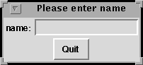
We can now click on the entry field, and type in some text, finishing with <Return>, and we get:
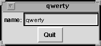
"Pressing" the quit button (i.e. moving the cursor over it and pressing a mouse button) closes the window and terminates the startTcl command.
The purpose of this documentation is:
This document is not intended to replace a Tk-Reference Manual, rather to be complementary. For serious working with sml_tk the user will constantly want to consult this document in order to get more information on legal options or the visual appearance of widgets.
A first version of sml_tk [KSW96] was developed from GoferTK [VTS95]. After translating it from a lazy pure functional language (Gofer) into an eager impure functional language (SML), and the extension of the functionality in the following versions, only a passing similarity remains, but we acknowledge the ancestry. We also snatched some code for the TCL_INSIDE configuration on the C-level.
More recently, Elsa Gunter and Dave McQueen of Bell Labs have made many suggestions and contributions which we gratefully acknowledge; in particular, Elsa Gunter has provided the implementation for polygons, arrowheads, and mixed colours.
For the current release, Erik Behrends provided code for the TCL_INSIDE configuration, and Andre Lüdtke many invaluable improvements on both the kernel and the toolkit (in particular, the filer).
Technically, sml_tk starts a Tcl interpreter (called a wish
for windowing shell) either as subprocess or a
subroutine. During runtime, sml_tk compiles
the description of the user interface (given by Widgets, Windows, etc
described above) into Tcl expressions which are passed to the wish.
sml_tk comes in two configurations:
the default configuration is based on a loose coupling with the wish, which is created as a child process. The connection between the wish and sml_tk is established via pipes, which is sufficiently fast for most applications and machines. This configuration runs with all SML compilers implementing the Posix module, on operating systems such as Linux and Solaris, but not Windows.
In the so-called TCL_INSIDE configuration Tk is linked into the SML runtime system. This configuration is only available for one particular implementation of SML, namely SML of New Jersey (SML/NJ). It offers higher speed, but is slightly more difficult to install. However, TCL_INSIDE is independent from the Posix module of SML (and thus potentially easier to port to Windows).
sml_tk keeps an internal GUI state consisting of a list of windows and additional information. This state is a logical image of the (external) state of the wish. This is pretty much in the style of [VTS95], but in contrast to the Tk interface caml_tk [PR95], where widgets and windows are built by successive calls of functions with side effects; in sml_tk, the data types for widgets and windows are freely generated in order to support a more functional style of programming, with less side effects.
The functionality of sml_tk can be divided into the following categories:
The user can change the state of the wish by inserting text into a text widget, by clicking on a radio button, by selecting a text in a listbox, by inserting a cursor into a text, by manipulating a scrollbar or by resizing a window. Since it would require far too much implementation overhead to enforce the equivalence between GUI state and state of the wish automatically and at all times, the distinction between the getXX-functions and the readXX-functions is crucial. In many cases, configuration and coordinates in the GUI state represent only the initial value, while the actual values have to be explicitly read from the wish. This is especially the case for Tcl variables, cursor positions within a texts, and texts editable by the user.
The GUI state is particularly useful to realize a binding mechanism. To most widgets, bindings can be annotated with the constructor BindEv, which takes as arguments an event and an action. An event is given by the structured data type Event, which models events as given in Tcl (see [Oust94], Chapter 8, pp. 199) in a structured way (examples are the events ButtonPress(SOME 1) for the first mouse button being pressed, or KeyPress "Return" for the Return key being pressed), and an action, which is an ML function of the functionality TkEvent-> unit. TkEvent is a data type containing information on the cursor position (both relative to the window and absolute and the buttons pressed) etc. sml_tk will map the ML functions (actions) to the events as extracted from the GUI state, and call the relevant ML function when the specified event occurs.
Tk is not completely orthogonal. In some cases, configuration options for a widget are expressed differently for each individual widget; sml_tk allows to abstract from these. However, the problem remains that not every component can be arbitrarily combined with each other, e.g. only particular widgets are allowed to build a menu. In Tk these constraints are checked dynamically. Since SML does not contain a subclass concept like Haskell which would allow to express such contextual side conditions on the type level, a compromise had to be made between precision in modelling the data types on the one hand and usability, flexibility and simplicity of the sml_tk user interface on the other. This compromise consists in collecting all configuration options into one data type, leaving violations to dynamic checks, while in all other places the construction of widgets is as accurate as possible.
Since Tcl does not provide any data type other than texts, and in particular no constructors for aggregations like arrays or lists, some ad-hoc constructs had been introduced to express collections and groups of objects. Since SML offers better ways to represent aggregations, sml_tk does not support these concepts and hence sometimes simplifies the view of Tk. This holds also for scrollbars (on text widgets and canvas widgets) which are no longer widgets in their own right in sml_tk.
An important design decision was made in binding SML functions (rather than threads) to events. This is the basis for sml_tk's simplicity; available concurrency toolkits (such as John Reppy's Concurrent ML, which unfortunately is based on cooperative multitasking) would limit sml_tk to particular SML implementations without providing a full solution to important requirements (such as a kill-button for diverging threads). For these reasons we stuck to the binding of functions to events (giving the control to the application during its evaluation) and provided an ad-hoc solution for the kill-button (see below).
This chapter contains a technical description of sml_tk's export interface in a reference manual style. The export interface consists of two signatures:
The two signatures correspond to the way in which an sml_tk application's interface is build: firstly, using the data types from TK_TYPES, the initial appearance of the interface is specified in a declarative way. Then control is passed to sml_tk, and the runtime behaviour of the application is a reactive system, i.e. the application's behaviour is a reaction to the user's input, implemented using the functions from SML_TK which allow dynamic changes to the interface and much more.
The main structure of sml_tk is the structure SmlTk. Its export interface consists of a join of the two signatures TK_TYPES and SML_TK, which completely restrict the implementing structure (also in the file sml_tk/src/export.sml). In SML terminology, the joint signature is the opaque interface to sml_tk.
This section describes the signature TK_TYPES. It mainly contains the data types, constructors and selectors for freely generated term structure by which the user interface can be specified in a declarative way.
The data structures closely mirror the Tk concepts. In order to understand these concepts, such as the different kinds of widgets, their purpose and configuration options, the graphical layout and the behaviour of the Tk layout algorithm (the "packer"), it will be necessary to consult the Tcl/Tk-book [REF 96] or the manual pages from the Tcl/Tk distribution package. This documentation will not try to explain these Tk concepts, but rather point out where sml_tk behaves differently from Tk.
The following types are identifiers for windows, widgets, canvas items, text annotations and images, respectively. See section 3.2.1 below how to create identifiers.
type WinId type WidId type CItemId type AnnId type ImageId
Exceptions usually indicate a programming error. Favourite examples include referring to non-existing widgets, windows or canvas items, wrong configurations (some widgets require certain configurations whereas others prohibit them), applying partial selectors to the wrong variant of the data type, using non-existing fonts or loading non-existing images.
exception CITEM of string exception WIDGET of string exception TCL_ERROR of string exception CONFIG of string exception WINDOWS of string
There are two functions by which to start an sml_tk application; one catches these exceptions and prints the relevant string (containing an error message), and one does not (see section 3.2.2 below). It should be pointed out these exceptions indicate some kind of malfunction, usually a programming error, so just catching them and continuing is not such a bright idea.
When running as reactive system, activation is driven by events such as mouse buttons or keys being pressed, or widgets (to be exact, their graphical representation on the screen) being entered or left with the cursor.
The most common reaction in Tk applications is that of a Command. Commands are specified as part of the Configure information in widgets such as buttons.
type SimpleAction = (unit -> unit)
For finer control of the interactive behaviour of the application, the data type Binding specifies a particular event and the corresponding reaction.
datatype Binding = BindEv of Event * Action
Events are given by the datatype Event. Events are either basic events, or modifications of events. Basic events are:
These can be modified as follows:
A final different kind of event is given by UserEv, which takes as argument a description of events in the style of Tcl (see [Oust94] section 18.3). This kind of event description is strongly discouraged, though, since syntactically wrong event descriptions lead to a wish runtime error.
datatype Event = (* window events *) FocusIn | FocusOut | Configure | Map | Unmap | Visibility | Destroy (* Key press/release events *) | KeyPress of string | KeyRelease of string (* Button press/release events, NONE means any old Button *) | ButtonPress of int Option.option | ButtonRelease of int Option.option (* Cursor events *) | Enter | Leave | Motion (* user-defined events, or explicitly given events *) | UserEv of string (* event modifiers *) | Shift of Event | Ctrl of Event | Lock of Event | Any of Event | Double of Event | Triple of Event | ModButton of int* Event | Alt of Event | Meta of Event | Mod3 of Event | Mod4 of Event | Mod5 of Event
Not all possible combinations make sense though; for example, a button event modified with a different button, or a doubled enter event are clearly paradoxical (and hence will never occur, so binding anything to them is a lost cause). An Action is an ML function to be called when the specified event occurs:
type Action = (TkEvent -> unit)
Events have the following structure:
datatype TkEvent =
TkEvent of int (* %b button number *)
* string (* %s state field *)
* int (* %x x field *)
* int (* %y y field *)
* int (* %X x_root field *)
* int (* %Y y_root field *)The corresponding selector functions are:
val selButton : TkEvent -> int val selState : TkEvent -> string val selXPos : TkEvent -> int val selXRootPos : TkEvent -> int val selYPos : TkEvent -> int val selYRootPos : TkEvent -> int
When no binding for an event has been specified, nothing happens, e.g. a button press in a canvas widget is simply ignored if no binding has been specified and does not lead to an error.
With some widgets or items, not all events are allowed in their binding; further, the information in TkEvent is only valid for some, but not all of the events. See chapter 18 in the Tcl/Tk handbook [Oust94] or the bind manual page about the details of events and bindings.
Be also warned that the interaction between mouse button presses and mouse movements is fairly intricate: when a mouse button is being pressed, all subsequent mouse events go to the widget or item over which this event has occurred until the mouse button is released. In particular, no enter event is generated if the mouse is moved into another widget, item or window with the mouse button pressed, the enter event will only be generated once the mouse button has been released.
Finally, be aware that the keyboard focus (see section 3.2.14) determines where keyboard events go. It will rarely make sense to bind actions to keys in widgets other than text widgets or entry widgets, since these other widgets will usually not be in a position to receive keyboard events.
Fonts in sml_tk are described by the data type Font, which offers a slight abstraction over the standard X11 description. The idea is to provide a set of standard fonts, which can be modified for style and size. These standard fonts are mapped (on calling SmlTk.init) to specific X11 fonts. If a specific font is not found (e.g. in a particular size or weight), another one is selected. This approach has been chosen because fonts are provided by the X server, and hence can change; this way, applications can still use different fonts, but are not dependent on any particular X11 font being present in the server.
The standard fonts are Normalfont, Typewriter, SansSerif and Symbol. They can be modified as Bold, Italic, Tiny (very small), Small, NormalSize, Large and Huge. The modifier Scale allows to scale fonts arbitrarily, where Scale 1.0 has the same effect as NormalSize. Users insisting on a particular X11 font can obtain these by XFont.
datatype FontConfig = Bold | Italic |
Tiny | Small | NormalSize | Large | Huge |
Scale of real
datatype Font = XFont of string
| Normalfont of FontConfig list
| Typewriter of FontConfig list
| SansSerif of FontConfig list
| Symbol of FontConfig listThe mapping of the standard fonts to the X11 font implementing them is described by the type Fonts.Config. The provided defaults are as follows:
val Config = {Normalfont = ref "-*-courier",
Typewriter = ref "-misc-fixed",
SansSerif = ref "-*-helvetica",
Symbol = ref "-*-symbol",
BaseSize = ref 12,
ExactMatch = ref true,
Resolution = ref 75
}Configure information correspond to Tk's options. It is the information used to customise the predefined widgets. Configure options which have not been specified are left open, and the default for the widget type in question is chosen.
The effects and intended use of the various configuration options, and which option is valid for which kind of widget, can be found in the Tk manual. The following configure options are supported by sml_tk. For every constructor we give the corresponding Tk option for easier reference to the Tk manual pages.
datatype Configure = Width of int (* -width ... *) | Height of int (* -height ... *) | Borderwidth of int (* -borderwidth ... *) | Relief of RelKind (* -relief ... *) | Foreground of Color (* -foreground ... *) | Background of Color (* -background ... *) | MUnderline of int (* -underline ... for menus *) | Accelerator of string (* -accelerator "bla" *) | Text of string (* -Label "bla" *) | Font of Fonts.Font (* -font "bla" *) | Variable of string (* -variable "bla" *) | Value of string (* -value "bla" *) | Icon of IconKind (* -bitmap or -image ... *) | Cursor of CursorKind (* -cursor ... *) | Command of SimpleAction (* -command ... *) | Anchor of AnchorKind (* -anchor ... *) | FillColor of Color (* -fill ... *) | Outline of Color (* -outline ... *) | OutlineWidth of int (* -width ... *) | Smooth of bool (* -smooth .. *) | Arrow of ArrowPos (* -arrow ... *) | ScrollRegion of int * int * int * int (* -scrollregion ... *) | Capstyle of CapstyleKind (* -capstyle ... *) | Joinstyle of JoinstyleKind (* -joinstyle ... *) | ColorMap of ColorMapEntry list (* -colormap ... *) | ColorMode of colorMode (* -colormode ... *) | File of string (* -file ... *) | FontMap of FontMapEntry list (* -fontmap ... *) | PrintHeight of string (* -height ... *) | PageAnchor of AnchorKind (* -pageanchor ... *) | PageHeight of string (* -pageheight ... *) | PageWidth of string (* -pagewidth ... *) | PageX of string (* -pagex ... *) | PageY of string (* -pagey ... *) | Rotate of bool (* -rotate ... *) | PrintWidth of string (* -width ... *) | PrintX of string (* -x ... *) | PrintY of string (* -y ... *) | Offset of int (* -offset ... Offset over baseline for texts *) | Underline (* -underline ... underline for texts (see MUnderline above) *) | Justify of Justify (* -justify ... Justification: left/right/center *) | Wrap of WrapMode (* -wrap ... *) | Orient of Orientation (* -orient ... *) | Active of bool (* -state ... *) (* Scale configurations *) | SLabel of string (* -label ... *) | Length of int (* -length ... *) | SliderLength of int (* -sliderlength ... *) | From of real (* -from ... *) | To of real (* -to ... *) | Resolution of real (* -resolution ... *) | Digits of int (* -digits ... *) | BigIncrement of real (* -bigincrement ... *) | TickInterval of real (* -tickinterval ... *) | ShowValue of bool (* -showvalue ... *) | SliderRelief of RelKind (* -sliderrelief ... *) | SCommand of ScaleAction (* -command ... special command for use with scales (called with the scale value) *) | RepeatDelay of int (* -repeatdelay ... *) | RepeatInterval of int (* -repeatinterval ... *) | ThroughColor of Color (* -throughcolor ... *) | InnerPadX of int (* -padx ... *) | InnerPadY of int (* -pady ... *) | Show of char (* -show ... (password entry fields etc.) *) | Tearoff of bool (* -tearoff ... tearoff for menus *)
datatype RelKind = Flat | Groove | Raised | Ridge | Sunken
The relief customises the visual three-dimensional appearance (see [Oust94] section 16.1.1) of widgets.
datatype Color = NoColor | Black | White | Grey | Blue | Green | Red | Brown | Yellow
| Purple | Orange | Mix of {red : int, blue : int, green : int}We apologise to British users for the spelling (and blame Tk for it).
datatype AnchorKind = North | NorthEast |
East | SouthEast |
South | SouthWest |
West | NorthWest |
CenterThe option AnchorKind is used for the orientation of an object with respect to their position (anchor) (see [Oust94] section 16.11.2).
These datatypes describe how lines, when drawing on a canvas, are joint.
datatype CapstyleKind = Butt | Projecting | Round datatype JoinstyleKind = Bevel | Miter | RoundJoin
type BitmapName type BitmapFile type ImageFile datatype IconKind = NoIcon | TkBitmap of BitmapName (* -bitmap <tk bitmap> *) | FileBitmap of BitmapFile (* -bitmap @<filename> *) | FileImage of ImageFile * ImageId (* -image ... *)
TkBitmap and FileBitmap allow the usage of X11 bitmaps. BitmapName must be the name of one of Tk's internal bitmaps. BitmapFile specifies a pathname of a file with the appropriate format. Bitmaps can be used with some widgets such as Label or Button (see also the bitmap manual page or [Oust94] section 16.3.3), and in canvas items (see section 3.1.7).
Tk also supports images (with depth more than 1). Images are specified with FileImage, where ImageFile is the pathname of a file in a recognised format such as GIF (for other formats supported see the image manual page). Examples can be found in src/tests+examples/big_ex.sml.
The three types BitmapName, BitmapFile and ImageFile are synonymous with string.
type CursorName type CursorFile datatype CursorKind = NoCursor | XCursor of CursorName * ((Color * (Color option )) option ) | FileCursor of CursorFile * Color * ((CursorFile * Color) option )
With XCursor the predefined Tk cursors can be used, where the argument CursorName is the name of a Tk cursor. The next two optional arguments are for the foreground and background colour of the bitmap cursor.
One can also use self-designed cursors via the constructor FileCursor. The first argument is the name of the bitmap file (CursorFile) for the cursor, the second the foreground colour and the last two optional arguments are a mask file (CursorFile) and the respective background colour.
The types CursorName and CursorFile are synonymous with string.
Examples can be found in src/tests+examples/big_ex.sml and details in [Oust94] section 16.11.1.
If users find they need to use Tk options which are not supported by sml_tk, they are invited to add support for them; look at src/config.sml to see how the other configurations are translated in Tcl code (and that is essentially all there is to do).
The layout in sml_tk is done with the Tk packer. Since release 3.0 sml_tk also supports grid packing, which means that you also place widgets in a specified row and column of a grid within a container. You can choose the packing algorithm using the Pack or Grid constructor of the type Widgets, which is used to specify the initial content of a container (containers in sml_tk are Frame as a normal container widget, TAWidget for widgets within annotated texts, CWidget for widgets within canvases, and of course windows). Once chosen you can not change the applied packing algorithm. The programmer is strongly encouraged to read chapter 17 of [Oust94] and try out some of the examples, as the Tk packer exhibits a somewhat intractable behaviour with occasionally rather surprising results; hence a certain amount of experimentation and experience will not go amiss.
Bear in mind that
sml_tk implements a basic subset of Tk's pack options and possibilities. These are:
datatype Edge = Top | Bottom | Left | Right
datatype Style = X | Y | Both
datatype StickyKind = N | S | E | W | NS | NE | NW | SE | SW | EW | NSE | NSW | NEW | SEW | NSEW
datatype Pack = Expand of bool
| Fill of Style
| PadX of int
| PadY of int
| Side of Edge
| Column of int
| Row of int
| Sticky of StickyKindWidgets (and their components) are the most important and powerful datatype of sml_tk (and Tk). They are the basic building blocks of any gui.
The different types of widgets are explained in the chapter A guided Tour through Tk Widgets in [Oust94]. sml_tk offers one constructor for every widget type. Selector and update functions on widgets are given where useful.
Some widgets like frames (a grouping of widgets), canvas widgets (a "drawing pad") and text widgets can contain either widgets themselves, or items (canvas items or text annotations) which contain widgets; this results in a mutually recursive, fairly lengthy data type definition.
As remarked above, the Widget, CItem and Annotation data types have some parameters which are only intended as initial values. They appear in italics below. If one wants to get the actual value of such an initial value, one has to use a readXXX function rather than a getXXX or selXXX function.
datatype Widget =
Frame of {widId : WidId, widgets : Widgets,
packings : Pack list, configs : Configure list,
bindings : Binding list}
| Message of {widId : WidId, packings : Pack list,
configs : Configure list, bindings : Binding list}
| Label of {widId : WidId, packings : Pack list,
configs : Configure list, bindings : Binding list}
| Listbox of {widId : WidId, scrolltype : ScrollType,
packings : Pack list, configs : Configure list,
bindings : Binding list}
| Button of {widId : WidId, packings : Pack list,
configs : Configure list, bindings : Binding list}
| Radiobutton of {widId : WidId, packings : Pack list,
configs : Configure list, bindings : Binding list}
| Checkbutton of {widId : WidId, packings : Pack list,
configs : Configure list, bindings : Binding list}
| Menubutton of {widId : WidId, mitems : MItem list,
packings : Pack list, configs : Configure list,
bindings : Binding list}
| Entry of {widId : WidId, packings : Pack list,
configs : Configure list, bindings : Binding list}
| TextWid of {widId : WidId, scrolltype : ScrollType,
annotext : AnnoText, packings : Pack list,
configs : Configure list, bindings : Binding list}
| Canvas of {widId : WidId, scrolltype : ScrollType,
citems : CItem list, packings : Pack list,
configs : Configure list, bindings : Binding list}
| Popup of {widId : WidId, tearoff : bool, mitems : MItem list}
mitems : MItem list}
| ScaleWid of {widId : WidId, packings : Pack list,
configs : Configure list, bindings : Binding list}
and Widgets = Pack of (Widget list)
| Grid of (Widget list)The type Widgets represents a collection of widgets, packed either with Tk's Packer geometry manager, or with the Grid geometry manager. Every widget has an identifier of the type WidId, and pack information, configuration options and bindings. Other parameters are widget specific, such as The following are useful selector and update functions for Widget. (Note that you can't update the widget identifier.) Some of these are necessarily partial, and when applied to the wrong variant of widget will raise the exception WIDGET. First, the ones applicable to all widgets:
val selWidgetId : Widget -> WidId val selWidgetBind : Widget -> Binding list val selWidgetConf : Widget -> Configure list val selWidgetPack : Widget -> Pack list val updWidgetBind : Widget -> Binding list -> Widget val updWidgetConf : Widget -> Configure list -> Widget
Functions specific to Canvas: val updWidgetPack : Widget -> Pack list-> Widget
val selCanvasItems : Widget -> CItem list val selCanvasScrollType : Widget -> ScrollType val updCanvasItems : Widget -> CItem list -> Widget val updCanvasScrollType : Widget -> ScrollType -> Widget
Functions specific to TextWid:
val selTextWidScrollType : Widget -> ScrollType val selTextWidText : Widget -> string val selTextWidAnnotations : Widget -> Annotation list val updTextWidScrollType : Widget -> ScrollType -> Widget val updTextWidAnnotations : Widget -> Annotation list -> Widget
As opposed to Tk, sml_tk does not offer a dedicated widget type for scrollbars. Rather, for the widget types for which scroll bars are useful- text widgets, canvas widgets, and list boxes- scrollbars are provided automatically. Their location is determined by the argument ScrollType in their constructor (where NoneScb means no scroll bar at all).
datatype ScrollType = NoneScb | LeftScb | RightScb | TopScb | BotScb | LeftTopScb | RightTopScb | LeftBotScb | RightBotScb
This also has the advantage that the programmer need not to concern himself with the programming of the scroll bar.
A canvas widget is a "drawing pad". Drawing on a canvas is done by placing the following canvas items onto it, and as opposed to normal widgets, the location of the items is exactly specified by means of coordinates, rather than left to a packing algorithm. In the toolkit library, canvas widgets have been used to implement a drag&drop package and a generic user interface (see section 4).
sml_tk provides all types of canvas items found in Tk. These are:
datatype CItem =
CRectangle of {citemId : CItemId, coord1 : Coord, coord2 : Coord,
configs : Configure list, bindings : Binding list}
| COval of {citemId : CItemId, coord1 : Coord, coord2 : Coord,
configs : Configure list, bindings : Binding list}
| CLine of {citemId : CItemId, coords : Coord list,
configs : Configure list, bindings : Binding list}
| Cpoly of {citemId : CItemId, coords : Coord list,
configs : Configure list, bindings : Binding list}
| CText of {citemId : CItemId, coord : Coord,
configs : Configure list, bindings : Binding list}
| CIcon of {citemId : CItemId, coord : Coord, iconkind : IconKind,
configs : Configure list, bindings : Binding list}
| CWidget of {citemId : CItemId, coord : Coord, widgets : Widgets,
configs : Configure list, bindings : Binding list}
| CTag of {citemId : CItemId, citemIds : CItemId list}As already noted above, italic parameters are the initial value. Coordinates as arguments of the constructors allow convenient specification of the initial position.
The following are the selector and update functions for CItem. Again, some of them will be necessarily partial and when applied to the wrong type of widget will raise an exception CITEM. First, the functions applicable to most or all canvas items:
val selItemId : CItem -> CItemId val selItemCoords : CItem -> Coord list val selItemConf : CItem -> Configure list val selItemBind : CItem -> Binding list val updItemCoords : CItem -> Coord list -> CItem val updItemConf : CItem -> Configure list -> CItem val updItemBind : CItem -> Binding list -> CItem
The following are specific to CIcon:
val selItemIcon : CItem -> IconKind val updItemIcon : CItem -> IconKind -> CItem
Within a CIcon item one can have the same bitmaps and images as presented in section 3.1.5.
The following are specific to CWidget:
val selItemWidId : CItem -> WidId val selItemWidgetConf : CItem -> Configure list val selItemWidgets : CItem -> Widget list val updItemWidgetConf : CItem -> Configure list -> CItem val updItemWidgets : CItem -> Widget list -> CItem
CWidget allows widgets within canvas items. Tk offers to have one widget within a window item. We found it useful to have more than one, so an sml_tk widget canvas item contains a list of widgets, which are placed within a frame widget. The WidId and Configuration arguments of the CWidget constructor refer to this frame widget. The identifier for the frame widget must be obtained by using the function newCItemFrameId (see section 3.2.1).
The following functions are specific for CTag:
val selItemItems : CItem -> CItemId list val updItemItems : CItem -> CItemId list -> CItem
CTag is only a very weak way of structuring canvas items. Many of the operations on CItems are not applicable to CTag, but e.g. moveCItem and setCItemCoords are, giving a convenient way of moving about groups of canvas items.
Text annotations are bindings and configurations for specific parts of text within a text widget. They can be used for two purposes, corresponding to the two variants of the data type Annotation below:
Positions or regions within a text are specified with the data type Mark. For historical reasons, sml_tk's marks are Tk's indices. For details, see [Oust94] section 19.6.
datatype Mark = Mark of int (* line number [1..] *)
* int (* char number [0..] *)
| MarkToEnd of int (* end of line i *)
| MarkEnd (* end of text *)
and Annotation =
TATag of {annId : AnnId, marks : (Mark * Mark) list,
configs : Configure list, bindings : Binding list}
| TAWidget of {annId : AnnId, mark : Mark, widId : WidId,
widgets : Widgets, configs1 : Configure list,
configs2 : Configure list, bindings : Binding list}As already noted italic arguments are only initial values. The position arguments of the constructors allow convenient specification of their initial position.
The following are the selector and update functions for Annotation. First, those that are applicable to both variants of annotations:
val selAnnotationId : Annotation -> AnnId val selAnnotationConf : Annotation -> Configure list val selAnnotationBind : Annotation -> Binding list val selAnnotationMarks : Annotation -> (Mark * Mark) list val updAnnotationConf : Annotation -> Configure list -> Annotation val updAnnotationBind : Annotation -> Binding list -> Annotation
selAnnotationMarks applied to a TAWidget returns a singleton list containing a pair of two marks both equal to the position of the widget annotation, i.e.
selAnnotationMarks(TAWidget(_,p,_,_,_,_,_)) = [(p, p)]
The following functions are specific to TAWidget and will raise an exception ANNOTATION when applied to TATag.
val selAnnotationWidId : Annotation -> WidId val selAnnotationWidgets : Annotation -> Widget list val selAnnotationWidgetConf : Annotation -> Configure list val updAnnotationWidgets : Annotation -> Widget list -> Annotation
TAWidget allows to embed widgets within a text. Tk offers to have one widget within a window annotation. We found it useful to have more than one, so an sml_tk widget annotation contains a list of widgets, which are placed within a frame widget. The WidId and Configuration arguments of the TAWidget constructor refer to this frame widget. The identifier for the frame widget must be obtained by using the function newAnnotationFrameId (see section 3.2.1).
Annotated texts consist of a text, given by a string, and a list of annotations within that text. They are provided as a separate datatype because this way they can be treated abstractly; e.g. there is a function which concatenates two annotated texts, adjusting the annotations in the second text (see section 3.2.9). The first, optional argument of the constructor AnnoText in the following is the length of the text (in lines and columns); if it is not given, it will be calculated on a by-need basis.
and AnnoText =
AnnoText of {len : (int* int) Option.option, str : string,
annotations : Annotation list}The selectors and update functions for annotated texts are
val selText : AnnoText -> string val selAnno : AnnoText -> Annotation list val updAnno : AnnoText -> Annotation list -> AnnoText
Annotated texts can be conveniently produced with sml_tk's markup language and the generic parser provided for it (see section 4.2), which alleviates the need to meticulously count lines and columns within a text.
A menu is a list of the following items:
and MItem = MCheckbutton of (Configure) list
| MRadiobutton of (Configure) list
| MCascade of MItem list * Configure list
| MSeparator
| MCommand of (Configure) listThese correspond to the Tk type. Note that for MCheckbuttons and MRadiobutton, a Tcl variable has to be specified (using the Variable configuration option) holding the status of the check or radio button. Their current status can be read using readVarValue (see section 3.2.10 below). Following are the selectors for MItem:
val selMCommand : MItem -> SimpleAction val selMRelief : MItem -> RelKind val selMText : MItem -> string val selMWidth : MItem -> int val selMItemConfigure : MItem -> Configure list
A window is a quadruple of a window identifier, a list of window manager options, its constituting widgets, and a SimpleAction that is evaluated just after the creation of the window. The latter can be used for initialisation of the widgets in the window, e.g. listboxes or text widgets can be filled with an initial content. Windows are created with the following function:
type Window
val mkWindow : {winId : WinId,
config : WinConfigure list,
widgets : Widgets,
bindings: Binding list,
init : SimpleAction} -> WindowIdentifiers for windows can be obtained by the functions newWinId or mkWinId (see section 3.2.1).
The selector functions for Window are:
val selWindowAction : Window -> SimpleAction val selWindowConfigures : Window -> WinConfigure list val selWindowWidgets : Window -> Widget list val selWindowWinId : Window -> WinId
The type WinConfigure provides a subset of the window manager options for windows, corresponding to the arguments of Tk's wm command (see chapter 22 of [Oust94]):
datatype UserKind = User | Program datatype WinConfigure = WinAspect of int * int * int *int (* xthin/ythin xfat/yfat *) | WinGeometry of ((int * int) Option.option) (* width x height *) * ((int * int) Option.option) (* xpos x ypos *) | WinMaxSize of int * int (* width * height *) | WinMinSize of int * int | WinPositionFrom of UserKind | WinSizeFrom of UserKind | WinTitle of string | WinGroup of WinId (* window / leader *) | WinTransient of WinId Option.option | WinOverride of bool
A window title must only contain printable characters (space up to ~). See also the function checkWinTitle in section 3.2.13.
The selector functions for WinConfigure are:
val selWinAspect : Window -> (int * int * int * int) option val selWinGeometry : Window -> (((int * int) option) * ((int * int) option) ) option val selWinMaxSize : Window -> (int * int) option val selWinMinSize : Window -> (int * int) option val selWinPositionFrom : Window -> UserKind option val selWinSizeFrom : Window -> UserKind option val selWinTitle : Window -> Title option val selWinGroup : Window -> WinId option val selWinTransient : Window -> WinId option option val selWinOverride : Window -> bool option
This section describes the functions from the signature SML_TK. Whereas the data types and functions from the signature TK_TYPES generate the term structure specifying the initial appearance of windows, widgets and other elements of the user interface, the functions from this section are primarily used to control the runtime behaviour of the application.
sml_tk's runtime behaviour is centred around the concept of an event loop. This means that after building the GUI as specified by a list of initial windows (see startTcl below), sml_tk enters a loop waiting for events from the user sent to the graphical display. They are interpreted internally in Tk, passed to sml_tk and then processed by calling ML functions provided by the programmer. In other words, sml_tk is running as a reactive system, since the application merely reacts to user interaction. These reactions can be specified as
Technically, this means that sml_tk keeps track which ML function is bound to which event. The wish is configured to send a string identifying the particular event when it occurs, and sml_tk maps this string to the corresponding ML function, which is then executed.
In Tk, windows and widgets are referred to by their pathnames. In sml_tk, windows and widgets are referred to by unique identifiers. The following operations produce fresh identifiers for windows, widgets, canvas items, frames for widgets within canvas items, text annotations and frames for widgets within >text annotations. The mkXX variants can be used to generate more meaningful names, for the advanced programmer analyzing the logfile (see the appendix).
val newWinId : unit -> TkTypes.WinId val newWidgetId : unit -> TkTypes.WidId val newCItemId : unit -> TkTypes.CItemId val newCItemFrameId : unit -> TkTypes.WidId val newAnnotationId : unit -> TkTypes.AnnId val newAnnotationFrameId : unit -> TkTypes.WidId val mkWinId : string -> TkTypes.WinId val mkCItemId : string -> TkTypes.CItemId val mkWidgetId : string -> TkTypes.WidId val mkFrameId : string -> TkTypes.WidId
Sometimes it is useful to generate names for widget identifiers from given ones in a reconstructible way. This can be done using the following function:
fun subWidId(w, str)= w ^ str
The programmer should take great care not to use one identifier for more than one window (widget, canvas item, etc), and in particular should not use identifiers other than those obtained by the above functions.
The following four functions control sml_tk's event loop, in particular start and termination of sml_tk:
val startTcl : TkTypes.Window list -> unit val startTclExn : TkTypes.Window list -> string val exitTcl : unit -> unit val resetTcl : unit -> unit
startTcl takes the main window description and starts the event loop- i.e. it builds and displays the specified list of windows (with all their widgets and subcomponents), and then waits and reacts to user interaction until either exitTcl is called, or the main window is closed.
startTclExn does the same as startTcl, but additionally catches any exceptions which are raised within sml_tk and prints their associated string value, detailing the nature of the failure leading to the exception (see section 3.1.2 above).
resetTcl has to be called before the application can be started again after it was interrupted irregularly, either by a user interruptor by raising an exception. There are two forms of interupts that can be sent by the user to the main window: either <CTRL-C> is pressed which will result in an interuption of the current evaluation of a function bound to an event and continue with the eventloop,or <CTRL-\> pressed which will result in a break of the eventloop and kill the user interface.
Opening a window with openWindow displays the window on the screen and adds it to the GUI state; for the main window, this is done by startTcl. An attempt to open a window with a window id equal to that of an already open window results in an error. The function occursWin can be used to find out if a window with a specific id has already been opened.
A window is closed with the function closeWindow. Closing the main window results in a call to exitTcl; this is the preferred way to terminate an sml_tk application.
val openWindow : TkTypes.Window -> unit val occursWin : TkTypes.WinId -> bool val closeWindow : TkTypes.WinId -> unit
The functions getWindow and getAllWindows can be used the extract information about some or all windows from the GUI state. changeTitle changes the title of the window (as appearing in its title bar).
val getWindow : TkTypes.WinId -> TkTypes.Window val getAllWindows : unit -> TkTypes.Window list val changeTitle : TkTypes.WinId -> TkTypes.Title -> unit
The function getWidget retrieves the widget specified by the identifier WidId from the GUI state.
val getWidget : TkTypes.WidId -> TkTypes.Widget
Widgets can also be added or deleted dynamically. addWidget adds the widget to the window specified by WinId into the widget specified by WidId. The latter widget has to be a frame widget, and the widget to be added will be inserted at the end of its list of subwidgets. delWidget deletes the specified widget.
An example for the use of addWidget and delWidget can be found in src/tests+examples/big_ex.sml.
val addWidget : TkTypes.WinId -> TkTypes.WidId -> TkTypes.Widget -> unit val delWidget : TkTypes.WidId -> unit
Note that it is not possible to add a widget to a window without any frames in it. In particular, it is not possible to add widgets to an initially empty window- clearly a pathological situation. If you really want a window which initially does not contain any widget, consider using only an invisible frame.
The visual appearance and the behaviour of a widget is modified by the configuration options and binding of the widget. This is is achieved with the following functions: setBind and setConf completely overwrite the bindings or configuration options for the specified widget, whereas addBind and addConf replace bindings or configuration options of the same kind, add new ones and leave the rest untouched.
val addBind : TkTypes.WidId -> TkTypes.Binding list -> unit val addConf : TkTypes.WidId -> TkTypes.Configure list -> unit val setBind : TkTypes.WidId -> TkTypes.Binding list -> unit val setConf : TkTypes.WidId -> TkTypes.Configure list -> unit
The functions getTextWidWidgets and getCanvasWidgets allow the convenient extraction of all top level widgets within text or canvas widgets; they are undefined for all other variants of widgets.
val getTextWidWidgets : TkTypes.Widget -> TkTypes.Widget list val getCanvasWidgets : TkTypes.Widget -> TkTypes.Widget list
You can also disable certain widgets using the Active configure option, which can also be set when the widget is already constructed (by the addConf or setConf functions). You can apply the Active configure option to buttons, radiobuttons, checkbuttons, menubuttons, scale widgets, entry widgets, and text widgets.
The functions in this section are for convenience only. They allow the easy extraction of parts of configuration options or bindings for a widget specified by its WidId.
(* are all derived from getWidget *) val getConf : TkTypes.WidId -> TkTypes.Configure list val getRelief : TkTypes.WidId -> TkTypes.RelKind val getCommand : TkTypes.WidId -> TkTypes.SimpleAction val getBindings : TkTypes.WidId -> TkTypes.Binding list val getWidth : TkTypes.WidId -> int val getMCommand : TkTypes.WidId -> int list -> TkTypes.SimpleAction
For example, getConf is the composition of getWidget and selWidgetConf.
This section describes some uniform operations for widgets containing text. These encompass mainly list boxes and entry widgets.
A position within text in these widgets is specified with the datatype Mark (see section 3.1.7 above) is used, with the following conventions:
These functions are mainly geared towards list boxes and entry widgets. For text widgets, we recommend the funtions detailed below, since they take annotated texts as arguments, and in particular handle read-only text widgets correctly - note that using insertText etc. on a read-only text widget will fail!
The functions insertText and insertTextEnd insert text into the widget specified by WidId at either the specified position, or the end. The function clearText deletes all text from the specified widget, and deleteText deletes the specified region of text from the specified widget.
val insertText : TkTypes.WidId -> string -> TkTypes.Mark -> unit val insertTextEnd : TkTypes.WidId -> string -> unit val clearText : TkTypes.WidId -> unit val deleteText : TkTypes.WidId -> TkTypes.Mark * TkTypes.Mark -> unit
Text in widgets of these kinds can be changed interactively by the user. Since this change is not reflected in the GUI state, the following functions have to be used to obtain the actual text (or region of text) from a widget.
val readText : TkTypes.WidId -> TkTypes.Mark * TkTypes.Mark -> string val readTextAll : TkTypes.WidId -> string
The user may select a position or a range of text within widgets containing text (see section 3.2.15 below). readCursor returns the position of the cursor, and readSelRange returns the regions of the selection as a list of pairs of positions (denoting start and end of the selected regions).
val readCursor : TkTypes.WidId -> TkTypes.Mark val readSelRange : TkTypes.WidId -> (TkTypes.Mark * TkTypes.Mark) list
For example, if wl is a list box, readCursor wl returns Mark(n,_) where n is the index of the list box currently containing the cursor.
Before using the function readSelRange it should be checked with the function readSelWindow (see section 3.2.15 below) that the user has indeed selected some text within the widget.
To get and change the current state (read-only or user editable) of a text widget, use the following functions:
val readTextWidState : WidId -> bool val setTextWidReadOnly : WidId -> bool -> unit
To manipulate the contents of text widgets, the following functions are provided. They work on read-only text widgets, and they take annotated texts as arguments, adjusting the annotations in the text as necessary when inserting it.
val clearAnnoText : WidId -> unit val replaceAnnoText : WidId -> AnnoText-> unit val deleteAnnoText : WidId -> Mark* Mark-> unit val insertAnnoText : WidId -> AnnoText-> Mark-> unit val insertAnnoTextEnd : WidId -> AnnoText-> unit (* use discouraged-- very inefficient! *)
The function insertAnnoTextEnd has been implemented in the obvious way, which involves reading the content of the text widget and counting its length, and is far more inefficient that in has to be. If you find you really need this function, consider contributing a more efficient implementation to sml_tk. Until then, restrict its usage to cases where it cannot be avoided.
The following functions are the counterpart to the functions on widgets in section 3.2.4 above for canvas items. They allow the dynamic addition of canvas items to a canvas, their removal from it and the reconfiguration of canvas item bindings and configurations. Canvas Items are identified by the WidId of the canvas within which they appear, and their CItemId identifier.
val getCItem : TkTypes.WidId ->
TkTypes.CItemId ->
TkTypes.CItem
val addCItem : TkTypes.WidId ->
TkTypes.CItem -> unit
val delCItem : TkTypes.WidId ->
TkTypes.CItemId -> unit
val getCItemBind : TkTypes.WidId ->
TkTypes.CItemId ->
TkTypes.Binding list
val getCItemConf : TkTypes.WidId ->
TkTypes.CItemId ->
TkTypes.Configure list
val addCItemBind : TkTypes.WidId ->
TkTypes.CItemId ->
TkTypes.Binding list -> unit
val addCItemConf : TkTypes.WidId ->
TkTypes.CItemId ->
TkTypes.Configure list -> unitAs already noted above the coordinates given to the constructor of a canvas item are only its initial values; the actual values can be read with readCItemCoords. setCItemCoords sets new coordinates, and moveCItem moves an item by the specified distance.
val readCItemCoords : TkTypes.WidId ->
TkTypes.CItemId ->
TkTypes.Coord list
val setCItemCoords : TkTypes.WidId ->
TkTypes.CItemId ->
TkTypes.Coord list ->
unit
val moveCItem : TkTypes.WidId ->
TkTypes.CItemId ->
TkTypes.Coord ->
unitNote setCItemCoords does not work for CTag canvas items, but moveCItem does. Also, deleting a CTag item does not delete the subitems, only the tag item itself, and adding bindings to a CTag item is somewhat useless, since they are not displayed as such --- you most probably want to add the bindings to the subitems.
The following functions return the height and width of a canvas item in a uniform way. For items of type CIcon with an image content, this is the only way to get their actual width and height. Note that the canvas item has to be displayed on a canvas to use these functions.
val readCItemHeight : TkTypes.WidId -> TkTypes.CItemId -> int val readCItemWidth : TkTypes.WidId -> TkTypes.CItemId -> int
The same set of basic functions as for canvas items is available for text annotations in text widgets. Text annotations are identified by the WidId of the parent text widget and an AnnId identifier.
val getAnnotation : TkTypes.WidId ->
TkTypes.AnnId ->
TkTypes.Annotation
val addAnnotation : TkTypes.WidId ->
TkTypes.Annotation -> unit
val delAnnotation : TkTypes.WidId ->
TkTypes.AnnId ->unit
val getAnnotationBind : TkTypes.WidId ->
TkTypes.AnnId ->
TkTypes.Binding list
val getAnnotationConf : TkTypes.WidId ->
TkTypes.AnnId ->
TkTypes.Configure list
val addAnnotationBind : TkTypes.WidId ->
TkTypes.AnnId ->
TkTypes.Binding list -> unit
val addAnnotationConf : TkTypes.WidId ->
TkTypes.AnnId ->
TkTypes.Configure list -> unitThe actual position and regions of annotations can be changed dynamically by the user (by editing the text in the widget); the function readAnnotationMarks reads their actual values. readSelection returns the location of selected text within the particular text widget. Before using this function, it should be checked with the function readSelWindow (section 3.2.15) that the user has really selected some regions in this widget, otherwise the exception TCL_ERROR will be raised.
val readAnnotationMarks : TkTypes.WidId ->
TkTypes.AnnId ->
(TkTypes.Mark * TkTypes.Mark) list
val readSelection : TkTypes.WidId ->
(TkTypes.Mark * TkTypes.Mark) listCaution: Since the user can interactively edit the text, it is possible that annotations are deleted without sml_tk noticing. Hence, you cannot be sure that an annotation, although defined and displayed, still exists, and referring to it may lead to an error. There are three ways to handle this situation:
For annotated texts the following utility functions are provided. mkAT makes a string into an annotated text without any annotations, mtAT is the empty annotated text, ++ concatenates annotated texts, keeping track of the annotations. nlAT appends a newline to the annotated text, and concatATWith concatenates a list of annotated texts, interspersing them with the given string.
val mkAT : string -> TkTypes.AnnoText val mtAT : TkTypes.AnnoText infix 6 ++ val ++ : TkTypes.AnnoText * TkTypes.AnnoText -> TkTypes.AnnoText val nlAT : TkTypes.AnnoText -> TkTypes.AnnoText val concatATWith : string -> TkTypes.AnnoText list -> TkTypes.AnnoText
Menus items are widgets, and as such can be added or deleted from a frame (containing other menu items, most likely) by the functions addWidget and delWidget above. Currently, sml_tk does not support the disabling of menus.
Pop-up menus are supported by the following two functions: createAndPopUpMenu takes a pop-up menu widget and pops it up at the specified coordinate, and popUpMenu pops up a menu at the specified coordinate which has already been specified somewhere else in the widget tree. The optional integer parameter is the index of the menu item which should be below the mouse when the menu pops up.
val createAndPopUpMenu : TkTypes.Widget ->
int TkTypes.option ->
TkTypes.Coord ->
unit
val popUpMenu : TkTypes.WidId ->
int TkTypes.option ->
TkTypes.Coord -> unitsrc/tests+examples/popup_ex.sml is an example for the use of popup menus.
As already noted in section 3.1.7 above, these two functions are needed in the context of check buttons or radio buttons. The first argument is the variable name, the second argument for setVarValue is the intended value.
val setVarValue : string -> string -> unit val readVarValue : string -> string
Coordinates are pairs of integers. They can be added or subtracted with addCoord and subCoord; smultCoord is multiplication with a scalar.
type Coord= int* int val addCoord : TkTypes.Coord -> TkTypes.Coord -> TkTypes.Coord val subCoord : TkTypes.Coord -> TkTypes.Coord -> TkTypes.Coord val smultCoord : Coord-> int-> Coord
A rectangle is given by two coordinates, specifying two of its corners. inside p r returns true if the point at coordinate p is inside the rectangle r, and intersect checks wether the two rectangles intersect. moveRect moves a rectangle by the specified coordinate (considered as a vector).
type Rect = Coord* Coord val inside : TkTypes.Coord -> Rect -> bool val intersect : Rect-> Rect-> bool val moveRect : Rect -> TkTypes.Coord -> Rect
val showCoord : Coord list -> string val convCoord : string -> Coord list val showRect : Rect -> string
val checkWidId : WidId -> bool val checkWinId : WinId -> bool val checkWinTitle : TkTypes.Title -> bool
These functions checks whether the argument is a correct window id, widget id or window title.
Implicit checks of the widget configurations have been added. The applied configurations are checked, when the widgets are packed. An exception WIDGET will be raised, when bad configure options are found. However, sml_tk's checks are not as comprehensive as one might hope for. The exception TCL_ERROR is raised when the wish returns a Tcl error- this happens in particular if an illegal window (widget, canvas item, etc.) is passed to the wish.
The functions focus and deFocus set and reset the keyboard focus to the specified window. Please refer to chapter 21 in [Oust94] for an explanation of the Tk focus model.
val focus : TkTypes.WinId -> unit val deFocus : TkTypes.WinId -> unit
With grab and deGrab, modal interactions can be implemented in sml_tk (see chapter 24 of [Oust94]). A grab "claims ownership" of the mouse and keyboard, such that all subsequent events will go to the claiming window. A particular example of this is a a window containing a dialog box the user is required to answer before proceeding.
val grab : TkTypes.WinId -> unit val deGrab : TkTypes.WinId -> unit
Be careful to alway release a grab with deGrab; failing to do so can lead into unpleasant situations. To prevent the worst case (completely freezing up the display) global grabs are not provided by sml_tk, i.e. all grabs are local.
In window systems such as X windows, the user can select regions of text by holding a mouse button and moving the mouse over the region of text to be selected. This selection is display-wide, and is called the X selection below. An application is said to own the selection if a region in one of its windows is selected. The function readSelWindow returns NONE if the application does not own the X selection, and the identifiers of the window and widget which own the X selection otherwise. Within text widgets, list boxes and entry widgets, the X selection can be accessed with the readSelRange
val readSelWindow : unit -> (TkTypes.WinId * TkTypes.WidId) TkTypes.option
Chapter 20 in [Oust94] explains the X selection in depth.
To handle interrupts (CTRL-C), sml_tk uses a very simple-minded broadcast model. Applications can register so-called listeners, which are functions which are called when an interrupt occurs (i.e. the user aborts an ongoing computation by hitting CTRL-C). Such a listener is given by the abstract data type intr_listener, and about the only thing we can do with that is de-register it again (which means, of course, that it isn't called anymore when an interrupt occurs). Typically, a listener will ensure an application's state consistency - note that interrupts can occur anywhere inside a function, so stateful computations may need to reset the state to a consistent value.
type intr_listener val registerIntrListener : (unit-> unit)-> intr_listener val deregisterIntrListener : intr_listener-> unit
Note that the user can also always type CTRL-/ to abort sml_tk altogether and return to the SML toplevel. If you want to change this behaviour (or the keys they are bound to), have a look at src/njml.sml. Note: this behaviour may not work correctly with all SML compilers (though it does with SML/NJ).
The init function initializes sml_tk: it sets the basic configurations of sml_tk from the environment as explained in section, and initializes the fonts and the terminal. It needs to be called before any sml_tk application is started. You can also initialize the fonts separately and unconditionally (init only initializes the fonts if the environment variable DISPLAY has changed.)
val init : unit -> unit val initFonts : unit -> unit
The following functions can be used to read or update the current values of the runtime configuration variables (see ). Note that updates will be overwritten by the next call to init. The only two interesting functions here will probably be getLibPath to get the location of image files etc, and updLogfilePath to switch on logging for one debug run of the system (see the appendix).
val getLibPath : unit -> string val updLibPath : string -> unit val getTclPath : unit -> string val updTclPath : string-> unit val getLogfilePath : unit-> string val updLogfilePath : string-> unit
The toolkit library offers two collection of modules which are not part of the core of sml_tk, but offer additional functionality. The first collection is called Common Infrastructure (CI) and comprises utilities, abstract events, exchange mechanisms between gui-components and common intercaces for visualizable elements that are used and exchanged between various more astract gui-components. The second collection called Gui Components (GC) and contains a number of preconceived (and sometimes generic) widgets and windows for a number of routine tasks in the implementation of gui's.
In more detail, the Common Infrastructure contains:
Based on CI, the Gui Components comprise the following:
The next five sections are concerned with the discription of CI, while the rest of the chapter is devoted to the description of Gui Components.
The clipboard module allows to interchange objects between different applications, like the filer and GenGUI.
Its basic idea is that applications can put objects into the clipboard, and other applications can get the objects previously put into the clipboard. The actions of putting and getting are certified by a TkEvent, and a subsequent get only retrieves the object if the cursor root positions of the certifying events match. For example, a put can be triggered by releasing the drag button outside the window, and the get can be triggered by the cursor entering the window. Then we would only want the get to retrieve the put object if the cursor has not moved in between, i.e. the root position of the TkEvents are equal.
The signature of the clipboard reads as follows:
signature CLIPBOARD = sig type obj exception Empty val get: TkTypes.TkEvent-> obj val copy : TkTypes.TkEvent-> obj val put: obj-> TkTypes.TkEvent -> (unit-> unit)-> unit val isEmpty: TkTypes.TkEvent -> bool end
get is as described above. The third argument to put is a call-back function, which is called if a subsequent get for the object succeeds. This can be used to ``pass'' objects from one application to another - the call-back function would delete the object from one application once another application has successfully taken it out of the clipboard. copy takes the object out of the clipboard without calling the call-back; hence if the callback is used to delete an object once it appears elswhere, by calling copy we would copy the object, rather than move it. isEmpty is true if a subsequent get (or copy) with the same event would be successful. An unsuccessful get or copy (either because there is no object, or because the two events do not match) will raise the exception Empty. Further, any unsuccessful get or copy will empty the clipboard.
As an example, consider the way the filer and GenGUI interchange objects. The filer is a functor which has as its argument the clipboard, and two functions converting files and directories into clipboard objects (because it depends on the application GenGUI is instantiated with how to convert a file name or directory name into an object):
functor ClipFiler (structure M : sig val filter_files : string -> string -> bool; exception bad_regexp structure CB: CLIPBOARD val fileToObj : string* string-> CB.obj val dirToObj : string-> CB.obj end): FILER_SIG
(At least, thuThe filer will call CB.put whenever the user releases the mouse button after a file selection. (By the peculiarities of Tk's event handling, even if the cursor has been moved over another window in the meantime, the Release event will still go the filer.)
Any application instantiating the GenGUI has to have a clipboard substructure:
signature APPL_SIG = sig [...] structure CB : CLIPBOARD sharing type CB.obj = unit -> object list end
Whenever a cursor enters the construction area, a CB.put is tried. If the cursor position matches the previous CB.get, then the cursor has not moved in between: this means that the Enter event has occurred immediately after a button release. (Note that if the mouse is moved into the construction area with the mouse button pressed, no Enter event is generated, only once the mouse button is released.) If the CB.get is successful, the user has dragged a file from the filer into the construction area, and GenGUI will have the object appear at that position. Note how we pass a closure rather than the actual object in order to avoid the unnecessary creation of objects.
Note the the type sharing equation above is not legal according to the SML97 standard, hence the real signature looks a bit more complicated.
Finally, the clipboard has two sub-signatures, CLIPBOARD_R and CLIPBOARD_W, which are for read-only and write-only access to the clipboard. For example, in the above the argument of the ClipFiler has actually write-only access to the clipboard, so the line reads
structure CB: CLIPBOARD_W
Some gui-components such as GenGUI associate an icon with every object, depending on its type and mode. The application has to implement these icons, assigning an icon to every object type and mode with the function icon: objtype* mode -> Icons.icon. The icon has to be implemented by the application, using the structure Icons in the toolkit library, which has the following export signature:
signature ICON_SIG = sig type icon val getIcon : string * string -> icon val selWidth : icon -> int val selHeight : icon -> int val selImage : icon -> SmlTk.IconKind val selHiLite : icon -> SmlTk.IconKind val selOutline : icon -> SmlTk.IconKind val selMicroline : icon -> SmlTk.IconKind exception ICON end
Every icon comes in four varieties: normal, highlighted, outlined and microlined (i.e. wee). The highlighted image is displayed to signal that an object is ready to receive a drag&drop operation (see above), the outlined image is displayed when an object is not ready to receive any kind of operation, the microlined object is used in the tree navigation component, and the normal image is presented at all other times.
The present implementation of icons assumes that all icons are Tk file images (i.e. graphical formats such as GIF readily understood by the wish). To create an icon, the function getIcon is called with the directory the file image is in, and its file name. The highlighted and outlined images are supposed to be in the same directory, with the base file name of the normal image suffixed with -hi, -out and -mic respectively (followed by the file name extension). They are also supposed to be of the same size as the normal image. Further, a data file with the same file name but the extension data has to exist which contains, in two lines, the width and height of the icon. (This is due to a catch 22 in the image handling of Tcl/Tk and GenGUI - essentially, we cannot know how large an image without displaying it, but we since we want to place it on the notepad, we need to know how large it is before we do that.)
For example, an application could have types of objects called wotsits and assign icons to them by the following function declaration
fun icon wotsits = getIcon("/home/me/example/icons", "wotsit.gif")
| icon ... = ...Then the directory /home/me/example/icons has to include the files wotsit.gif, wotsit-hi.gif, wotsit-out.gif>, wotsit-mic.gif and wotsit.data. If all of wotsit*.gif are GIF images sixty pixels wide and forty pixels high will consist of only the two lines
60 40
(Note that GIF images are a licensed trademark of Unisys, Inc.) Finally, the icon used to represent the trashcan is determined by the configuration as in the next section.
Once you've written down two or three annotated texts, you very easily get bored at having to count lines and rows in order to get your annotations in the text. In order to remedy this situation, sml_tk provides a markup language, and a generic parser for it.
The fully generic markup language parser is a functor takes as an argument a structure describing tags. A tag is an SGML element of the form
<tagname arg1 ... argn> ... </tagname>
This generates an annotation from the start of the tag to the end of the tag. Tags are given by matchingTag, where the first argument is the tagname above. The annotation is generated by the function annotationForTag, which is passed the tag as the first argument, and the list of arguments as the second argument. The type widgetinfo is just a workaround to allow annotationForTag to be passed arguments like the identity of the widget.
The markup parser further recognizes escape sequences of the form &name;. These are given by the function escape, which is passed the name of the escape sequence, and either returns a string replacing the escape, or NONE in which case the escape sequence is left as is in the text. Three escape sequences are predefined, namely & for &, > for > and < for < (since these are needed by any sensible markup language).
Finally, the exception AnnotationError can be raised by the function generating to annotation to indicate an error (e.g. a tag with not enough parameters). The exception error is raised if there is a critical error during parsing. The parser is actually quite good-natured, and will e.g. only print warnings (via warning) if there are open elements which do not close (for these, annotations up to the end of the text are generated). The only critical errors are < and & not followed by any > or ; respectively.
signature TAGS =
sig
type tag
type widgetinfo
val matchingTag : string-> tag option
val annotationForTag : tag ->string list-> widgetinfo->
(TkTypes.Mark* TkTypes.Mark)->
TkTypes.Annotation
val escape : string-> string option
exception AnnotationError of string
val warning : string-> unit
val error : string-> exn
endThe markup language parser exports just one function, which takes a text in a markup language as described by the argument, and returns an annotated text:
signature SMLTK_MARKUP = sig type widgetinfo val getAnnText : widgetinfo-> string-> TkTypes.AnnoText end functor SmlTkMarkup (Tags: TAGS) : SMLTK_MARKUP where type widgetinfo= Tags.widgetinfo
The file src/toolkit/tests+examples/markup_ex.sml contains an example of a small self-defined markup language. Moreover, the toolkit library contains an extendible markup language, the sml_tk Standard Markup Language, which provides tags to set fonts, scale fonts, or raise and lower boxes, and in particular a rich set of escape sequences for mathematical characters and mathematical notations (α, ∀, &tensor; etc.) The file src/toolkit/tests+examples/stdmark_ex.sml shows how to use the standard markup language. It comes in two variations, one which is extendible (functor StdTags) with more tags, and one which is closed and ready to use (structure StdMarkup).
Several higher toolkit components require a common notion (or: format) of objects for their visualization functionality - this notion is represented by the signature OBJECT_CLASS that is part of the input signature of the functors representing these higher Toolkit Components. Thus, OBJECT_CLASS is fundamental for toolkit components like TreeList or GenGui. Morover, there is a functor obj2tree_obj, that extends OBJECT_CLASS to TREE-OBJECT_CLASS, where TREE-OBJECT_CLASS is a strict signature extension of OBJECT_CLASS. The instances of TREE-OBJECT_CLASS all have a tree-like structure and are suited for the representation of file-systems, proof-terms, etc. Once we have one notion of objects, obj2tree_obj builds a tree-like organization with folders as nodes and input objects as leaves. This facilitates the construction and data exchange via uniform interfaces and common lifting facilities for toolkit-components with respect to objects.
OBJECT_CLASS and its variants are part of the Common Infrastructure CI. In more detail, OBJECT_CLASS instances contain the following elements:
The signature in itself reads as follows:
signature OBJECT_CLASS =
sig
type
object
eqtype
objtype
type
name
(* think of it as : id *)
val
ord
: object * object -> order(* based on name *)
val name_of : object
-> name (*
think of it as : id_of *)
val string_of_name : name -> Print.format ->
string
val
rename : string
->
object -> unit(* side effect *)
val reset_name : object ->
unit
(* side effect *)
val obj_type : object ->
objtype
val
icon :
objtype -> Icons.icon
end
More formally, these elements are specified to have the following properties:
In the following. we turn to the extension of OBJECT_CLASS, namely TREE-OBJECT_CLASS. The entity TREE_OBJECT_CLASS is a subclass of OBJECT_CLASS. It is enriched by FOLDER_INFO, SUBNODE_INFO and functions that exploit (or enforce) the tree-like structure of TREE_OBJECT_CLASS-elements, i.e. terms of type obj. Additionally, they provide the concept path on folders and path-related operations. The auxilliary signatures FOLDERINFO contains the information that makes abstractly the skeleton or just the node of a folder, but not its content. This node_info must contain the following:
Now, FOLDERINFO reads as follows:
signature FOLDERINFO =
sig
type
node_info
type subnode_info
val string_of_name_node : node_info ->
Print.format -> string
val ord_node
: node_info * node_info -> order
val rename_node
: string -> node_info -> unit
val reset_name_node :
node_info -> unit
end
Some properties are specified as follows:
The signature TREE_OBJECT_CLASS is constructed on top:
signature TREE_OBJECT_CLASS =
sig
include OBJECT_CLASS;
include FOLDERINFO;
structure Basic : OBJECT_CLASS;
val getContent : object ->
Basic.object * subnode_info
val getFolder :
object -> node_info * object list
val isFolder :
object -> bool
val Content
: Basic.object * subnode_info -> object
val Folder
: node_info * object list -> object
val isFolderType : objtype -> bool
val
getContentType : objtype -> Basic.objtype
val
ContentType : Basic.objtype ->
objtype
end
Its specification contains the following conditions:
A variant of TREE_OBJECT_CLASS is the signature PTREE_OBJECT_CLASS, which extends the former by path-related operations.
signature PTREE_OBJECT_CLASS =
sig
include TREE_OBJECT_CLASS;
type
path
= node_info list * Basic.object option
(* path and name are identical in PTREE_OBJECT_CLASS. Unfortunately,
* this can't
be said explicitly in SML. Therefore, we establish an
* isomorphism. *)
val
ord_path : path *
path -> order
val is_prefix : path
* path -> bool
val concat_path : path * path ->
path
val
name2path : name -> path
val
path2name : path -> name
(* The
foll. opns may fail if paths do not exist or are not unique
*)
(*
NOTE : this implies that node_info and obj must be unique if
*)
(*
these operations are expected to work properly *)
val get_path :
object -> object -> path list
(* get_path a b produces path
of sub-object b in object a *)
exception InconsistPath;
val select_from_path : object list -> path -> object
val
remove_at_path : object list -> path -> object list
(* removes_at_path a produces object
from a with subobject at p removed *)
val update_at_path : object list -> path -> object -> object list
end
A standard method to lift instances of OBJECT_CLASS to PTREE_OBJECT_CLASS (and thus TREE_OBJECT_CLASS) is given by the functor obj2tree_obj, that embeds standard objects into a tree-like data structure:
functor obj2tree_obj (structure
N:FOLDERINFO and
M:OBJECT_CLASS) : PTREE_OBJECT_CLASS
The sml_tk-Toolkit provides two larger parametric components, that produce for a given application a graphical user interface, slightly similar to the model-view-controller paradigm known from object-oriented GUI programming, where our application corresponds to the model. Technically, these two parametric components, GenGui and TGenGui, are implemented as functors that map applications to widgets that contain the GUI for this application. Applications are part of the Common Infrastructure CI.
In the following, we represent a family of application signatures NP0_APPL_SIG, NP_APPL_SIG and APPL_SIG that represent the interface into which a given application must be wrapped in order to be accomodated for this functor.
An application essentially contains:
In more detail, the discussed signatures look as follows:
ignature NP0_APPL_SIG =
sig
include OBJECT_CLASS
(* New objects are objects
together with an annotation where
* they should appear.
This is a coordinate followed by an Anchor
* which gives the direction
in which GenGUI tries to place the
* object if another object
is in the way.
* new_object will correspond
directly to Contents in TreeObjects.
*)
type new_object = object *
(SmlTk.Coord* SmlTk.AnchorKind)
(* Now comes the
GenGUI-specific OBJECT_CLASS extensions:
Typing, modes,
is_constructed, outline. *)
(* Typing *)
val objlist_type : object list -> objtype Option.option
val is_constructed :
objtype-> bool
(* objects of this type are construction objects *)
(* "Modes" are
states for objects. They are changed with the object's pop-up
* menu, which displays the
mode by the mode_name given below.
* Every object's mode can be
set within the range given by its type
* (function modes below) by
set_mode.
* Every object's mode can be
set within the range given by its type (function
* modes below) by set_mode.
*)
eqtype mode
val mode
: objtype -> mode
(* New ! mode is attached to objtype
for structuring reasons . . . *)
val modes
: objtype -> mode list
val mode_name : mode
-> string
val set_mode : object * mode
-> unit
(* These objects are
displayed with an "outline" icon, to indicate
* some out-of-date
condition. Note that they can still receive
* drag-and-drop operations.
*)
val outline
: object-> bool
(*
* Nullary objects are
constants, or in other words, objects
* existiting a priori.
* The init function returns
a list of all these objects; it will
* only be called once, on
startup.
*)
val init : unit ->
new_object list
(* Unary operations *)
(* standard actions, called
ops for historic reasons *)
val std_ops
: objtype-> ((object -> unit) * string) list
(* better signature ? *)
val create_actions: (({pos :
SmlTk.Coord, tag : string} -> unit)
* string) list
val label_action : {obj :
object,
cc : string -> unit}-> unit
val delete
: object -> unit
(* further object type
specific operations: for a type t, monOps t
* is a list of pairs (f, s),
where f is a unary operation, and s
* is a string, the name
under which it appears in the pop-up
* menu. f has the
functionality
*
object* SmlTk.Coord-> (newObject-> unit)-> unit;
* where the first argument
is the object itself, together with its present
* location, and the second
argument is a continuation you can use
* to create new objects.
*)
val mon_ops : objtype ->
((object * SmlTk.Coord ->
(new_object -> unit) -> unit) * string) list
(*
*
* binary operations
*
* aka.the
drag&drop-action-table
*)
val bin_ops : objtype *
objtype -> (object * SmlTk.Coord *
object list *
(new_object-> unit) -> unit)
Option.option
(* --- Substructures -------------------------------------------------- *)
(* The clipboard will
allow the exchange of items between
* the drag&drop
area and other application-specific
* widgets-- eg. a
chooser.
* It gets passed
closures of objects, so we create
* an object only if it
is really taken out of the clipboard
*)
type objectlist= unit->
object list
structure CB : CLIPBOARD
sharing type CB.obj =
objectlist
(* --- Configuration -- see above --- *)
structure Conf : GENGUI_CONF
end;
This signature is enriched by
a concept of object locking in signature NP_APPL_SIG:
signature NP_APPL_SIG =
sig
include NP0_APPL_SIG
val object_action
: {win : SmlTk.WinId,
obj : object,
replace_object_action : object -> unit,
outline_object_action : unit -> unit}
-> unit
val is_locked_object: object
-> bool (* locking manipulations -
* e.g. opened construction objects *)
end;
Finally, the concepts for the construction area and a GUI state (plus initialization operations) are added:
signature APPL_SIG =
sig
include NP0_APPL_SIG
(* --- The Construction Area ----------------------------------------- *)
type ca
(* This data type represents
the Construction Area's
* state. It might eg.
probably contain the area's
* widget's widget id.
*)
(* This should be the
respective row of the drag&drop table in
* binaryOps above. Has to be
here explicitly, since it will change
* the whole area rather than
just the object. Further, objects may
* behave differently while
being open.
*)
val area_ops :
objtype-> ca-> object list-> unit
(* open an object to be
worked on the construction area
* The old object is deleted
from the manipulation area.
*
* One (or even more?) new
objects may appear on the notepad
* when the construction
finishes, they are introduced with
* the second argument.
*
* The result is a tuple,
consisting of a data structure
* ws as above, a list of
widgets representing the
* area on the screen and an
init function to be called after
* the widget has been placed
and that would not be necessary
* if we could instantiate
text widgets properly.
*)
val area_open : SmlTk.WinId*
object* (object -> unit) ->
(ca* SmlTk.Widget list* (unit-> unit))
val area_init : unit->
unit
(* initializations that need to be done only once.
* !!! Caution, this is called when the area isn't open.
*)
end
The module UW offers a variety of often used windows for user confirmation, error or warning messages, or user input. Conceptually, there are two different types of input dialogues: modal and non-modal. With modal windows, the whole system should only proceed once the input is completed; with non-modal windows, the input can be mixed arbitrarily with other inputs. Non-modal windows may remain open and communicate via a global state. Nearly all of the windows exported from util_win are non-modal in the above sense, except for enterText and enterLine.
In detail, the module util_win exports the following functions:
val error : string -> unit val warning : string -> unit
Brings up a window with an error or warning messages as given by the first argument, and once the OK button is clicked. There is no semantic difference between an error and a warning except for the icon used.
For modal error or warning windows, use the following:
val error_cc : string* (unit-> unit)-> unit val warning_cc : string* (unit-> unit)-> unit
The argument should be the continuation, i.e. the function to be called after the Continue button has been clicked. Both of these functions return once they opened the window, so for modal behaviour you'll have to pass the continuation:
let val go_on = fn x=> (print("The close button has been clicked.\n");
testw x)
in UW.error_cc("An error has occured.", go_on);
print "The window has just been opened.\n"
end
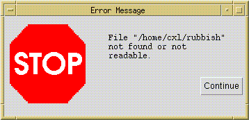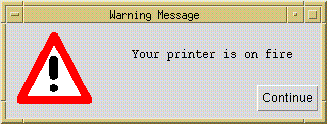
val confirm : string* (unit-> unit)->unit
Brings up a window with the given text. If the user clicks the OK button, the continuation is called, otherwise the call evaluates to nothing. The window looks like this:
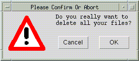
The icon appearing with the confirmation window is the same as appearing in warning windows (but this can be changed - see below).
Information windows display informative messages to the user. They come in two variations, a simple non-modal one which stays open until it is dismissed, and a modal one, which returns a function which when called closes the window (ensuring it stays open at least ten seconds).
val info : string-> unit val info_cc : string-> (unit-> unit)
Both open a window like the following, except the modal version lacks a close button:
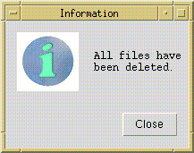
val display: {title: string, width: int, height: int,
text: SmlTk.AnnoText, cc: SmlTk.WidId-> unit}-> unit
val display_id: {winId: SmlTk.WinId, widId: SmlTk.WidId, title: string,
width: int, height: int, text: SmlTk.AnnoText}-> unitThese functions open up a window and display an annotated text in a dedicated window with a close button at the bottom left corner. Their difference is the way in which the identity of the text widget is handled: the first variant creates a text widget from scratch, and passes the widget id to the continuation cc, the other takes a window and widget id as argument and builds a text widget in a window of that parish.
val enterText : {title : string, prompt : string, default : string,
width : int, height : int, cc : string-> unit} -> unit
val enterLine : {title : string, prompt : string, default : string,
width : int, cc : string-> unit } -> unit
If you want different fonts, icons or layout, all can be easily
rearranged by changing the configurations of the utility windows,
which are the first couple of lines in src/toolkit/util_win.sml.
Simple numeric choosers, an entry for integer values as in the following dialog (taken from the tabs example in src/toolkit/tests+examples/tabs_ex.sml):
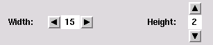
The structure NumericChooser has the following export signature:
signature NUMERIC_CHOOSER_SIG =
sig
val numeric_chooser : {initial_value : int,
min : int option,
max : int option,
increment : int,
width : int,
orientation : SmlTk.Orientation,
selection_notifier : int -> unit} ->
{chooser : SmlTk.Widget,
set_value : int -> unit,
read_value : unit -> int}
end
The function numeric_chooser needs the following data to
create a numeric chooser: the initial value of the chooser, an
optional minimum and maximum value, a value to add/subtract when a
button is pressed, the number of columns of the label, in which the
value is displayed, the orientation of the chooser (SmlTk.Vertical
or SmlTk.Horizontal) and a
function to be called when the value changes. It returns a frame widget
containing the numeric chooser, a function for external setting of
the value and a function that returns the current value of the
chooser.
The functor Filer offers a generic file browser, allowing the user to browse the file system in the usual manner, and even search for regular expressions:
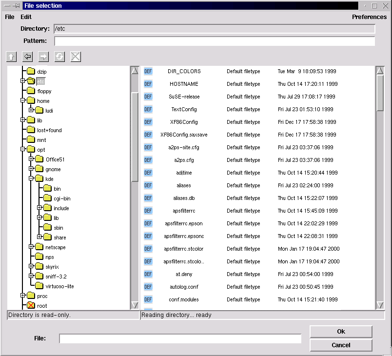
The Filer functor has the following argument signature:
sig val icons_path : unit -> string
The directory containing the icons to display for the filetypes specified in the list below.
val icons_size : int * int
The maximum width and height of these icons, needed to calculate the width and height of the file entries.
val root : unit -> string option
An optional root directory in the browsed filesystem (if there is no root directory specified, the whole filesystem is browsed).
val default_pattern : string option
The displayed files are filtered using the regular expression matcher contributed by Ryan Stansifer <ryan@cs.unt.edu> (which can be found in src/toolkit/regExp). Here you can specify a default pattern, which still can be changed by the user, but which is reapplied for every new entered directory.
structure CB : CLIPBOARD_W
The clipboard instantiation (see Sect. 4.5 below for further informations on the clipboard).
val filetypes : {ext : string list
display :{comment : string,
icon : string,
preview : ({dir : string,
file : string} -> unit) option,
file_to_obj : ({dir : string,
file : string} -> CB.obj)
option} option} listThe list of known filetypes. A file is associated with a filetype by the extension. The extensions matching a filetype are given in a string list. You can also specify a default filetype (using the empty string "" in the extensions list), which is applied when no other filetype is matched. If no default filetype is specified, unmatched files are displayed as »Unknown filetype« with a system icon. The file type determines the icon used to display the file, how to preview a file with the middle mouse button, and how to import it into other smlt_tk components.
The display parameter is an option, because you might not want to display all filetypes. If it is set to NONE, files of this type will not be displayed. If a filetype should be displayed, you need to specify at least a comment to display with the files, such as »GIF image« of »ML source«, and an icon (of the maximum size above). Optionally there is also a preview function to be called with the file (see also the filer example in src/toolkit/tests+examples/filer_ex.sml). The optional file_to_obj function is part of the clipboard instantiation and returns a representation of the dragged file in the clipboard object type. It only needs to be specified if you want to provide drag and drop functionality for this filetype.
structure Conf : FILER_CONFIG
In the Conf structure further configuration options concerning the look and feel of the filer are offered. There is also a structure FilerDefaultConfig (in src/toolkit/filer_default_config.sml), which you can use if you do not want to configure the filer from scratch.
end
The structure Conf has to match the following signature:
signature FILER_CONFIG = sig val title : string option
The title of the file selection window. If no title is specified, it will be »File selection«.
val font : SmlTk.Font val font_height : int
The font to use in the file selection dialog, its height in pixels is needed to calculate the height of a single lines in the files- and folders-boxes.
val foldersbox_width : int val filesbox_width : int val filesbox_numcols : int val boxes_height : int
The size of the boxes (in pixels), in which the files and folders are displayed, the number of columns of icons in the files box, and the height. Both boxes have the same height. The width of the filesbox must be at least filesbox_numcols times the width of a label containing filenames_cut characters (see below) in the specified font, otherwise the file entries might cross the right border of the visible part of the filesbox canvas (because sml_tk cannot really calculate the size of any components drawn onto a canvas-Widget).
val foldernames_cut : int val filenames_cut : int
Here you can specify the maximum length of the displayed names of the files and folders.
val icon_font : SmlTk.Font val icon_font_height : int
The user can choose between detailed mode, which means that files are displayed with comments and the date of last modification, and non-detailed mode, where only the icon and filename is displayed in »icon style«. In this case, you might want to use a smaller font, which you can specify here, and of course you need to give the maximum height of this font here as well.
val preferences : {sort_names : bool,
sort_types : bool,
show_hidden_files : bool,
hide_icons : bool,
hide_details : bool}
end
These are the user configurable settings, when the filer is first
opened. As mentioned above, the files can be displayed in detailed or
non-detailed mode, but the user can also choose if and how the files
should be sorted, if he wants to see hidden files and if icons should
be displayed.
The filer can be run in two modes: stand-alone,
where it runs as the main sml_tk window, and returns the
directory and file name of a selected file, and as a subwindow, where
the filer communicates with other components via drag&drop. Thus,
we have the following export signature:
signature FILER_SIG = sig (* critical errors -- e.g. can't open root directory *) exception Error of string (* stand alone version *) val stand_alone : unit -> (string option * string option) option (* system versions *) val file_select : ((string option * string option) option -> unit) -> unit val enter_file : unit -> unit
stand_alonestarts its own wish using startTcl and therefore should not be used in the context of a running sml_tk-based application. Its main use is probably to debug filer configurations. The file_select function needs a continuation function to be called with the the directory and file name of a selected file, both as an option because there might be none. The normal way to start the filer is the enter_file function. It does not return a value, since selected files will be exchanged via the clipboard (see below).
(* set preferences *)
val set :{sort_names : bool option,
sort_types : bool option,
show_hidden_files : bool option,
hide_icons : bool option,
hide_details : bool option} -> unit
end
The set function can be used
to set the user configurable options. It should only be used when the
file selection window is not open.
There is also a partial
instantiation of the filer without clipboard support, the functor
SimpleFiler, which has the
following argument signature:
functor SimpleFiler(structure Options :
sig
val icons_path : unit -> string
val icons_size : int * int
val root : unit -> string option
val default_pattern : string option
val filetypes : {ext : string list,
display : {comment : string,
icon : string,
preview : ({dir : string,
file : string} -> unit) option,
(* instantiate with NONE ! *) file_to_obj : ({dir : string,
file : string} -> DummyCB.obj) option} option} list
structure Conf : FILER_CONFIG
end) : FILER_SIGAs there is no clipboard support, you don't need to specify file_to_obj functions in the filetypes list.
Tree Lists are used to edit, browse and select in tree-like objects. These tree-like objects are represented by PTREE_OBJECT, a data structure that is part of the Common Infrastructure CI which is also used by other GUI components. Consequently, PTREE_OBJECTS can be exchanged with these components via the clipboard. A tree list can look like in the following screenshot (taken from the example in src/toolkit/tests+examples/tree_list_ex.sml):
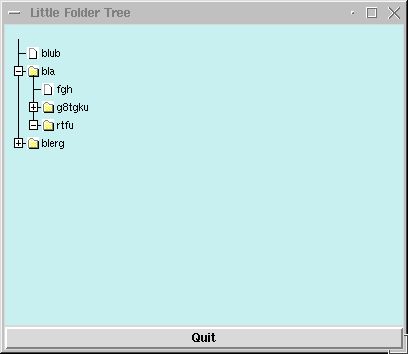
TreeList is a functor that maps objects of PTREE_OBJECT_CLASS (enriched by additional information) to a widget together with operations maniputating its state. The input signatures are in detail:
signature
TL_ACTION =
sig
type
object (* SML-necessity since no
HO-functors *)
eqtype node_info
(* SML-necessity since no HO-functors *)
type subnode_info (* SML-necessity since no HO-functors
*)
type path
(* SML-necessity since no HO-functors *)
val content_label_action :
{path:path, was: string, cc: string -> unit} -> unit
(* fired whenever a content label is activated.
* Should be a modal action. *)
val focus_change_notifier :
{changed_at:path list} -> unit
(* fired whenever a folder label or a folder icon is modified;
*
should be used if TreeList is nonmodally coupled over
* gui_state with a notepad. *)
val objtree_change_notifier :
{changed_at: path} -> unit
(* fired whenever the tree-structure (gui_state) has been modified -
*
e.g. as a consequence of an internal drag-drop.
* Used for rehresh`s of other views. *)
val open_close_notifier :
{is_open:bool,changed_at:path list} -> unit
(* fired whenever a folder label or a folder icon is opened;
*
can be used if internal tree is incrementally . *)
val error_action
: string -> unit
(* fired whenever illegal drag-drop-operations are attempted.
*
Should be a modal action. *)
end
Note that open_close_notifier can be used to generate this part of a subtree that is not already displayed; by this means, large trees can be displayed by incrementally inserting additional parts of the tree-state whenever this part is actually needed in the display. For technical reasons, the following wrapper signature brings all elements together that are needed for the TreeList functor:
signature
JOIN = (* only there fore stupid SML-reasons *)
sig
structure M : PTREE_OBJECT_CLASS;
structure A : TL_ACTION;
structure CB : CLIPBOARD;
sharing type A.object
= M.object;
type
objlist = unit -> M.object list;
(* there it is, the stupid reason *)
sharing type CB.obj
= objlist;
sharing
type A.node_info = M.node_info;
sharing type A.subnode_info = M.subnode_info;
sharing type A.path
= M.path
end
On top of this definition, we have the functor TreeList that generates our gui-component:
functor
TreeList (structure S : JOIN) :
sig
datatype scale = micro | mini | demo
type config = {hight
: int ref,
(* default 300 *)
width : int ref,
(* default 400 *)
scrolltype: SmlTk.ScrollType ref,(* default NoneScb*)
no_icons : bool ref,
(* no icons used;
* default false *)
std_icons : bool ref,
(* use icons speci-
* fied in M or use
* std-icons;
* default true *)
scale_factor: scale ref
(* scales display,
* default micro *)
}
val Config
: config
val create_canvas: S.M.object list -> SmlTk.Widget
val upd_guistate : S.M.path -> S.M.object list -> unit
val get_guistate : unit -> S.M.object list
val refresh : S.M.path -> unit
val refresh_label: unit ->
unit
val get_selected : unit -> S.M.object list
val set_selected : S.M.path list -> unit
end
There is a slighly older version of the TreeList-Component described in the previous section, called Lazy Tree Lists. It has even in some parts a slightly better implementation, but is not integrated into the common infrastructure (CI). It also provides a simple history to navigate within the browsed data. You have to instantiate LazyTree with an object type and some functionality on it. Most prominently, the lazy tree lists are used in the filer, whence the following screenshot has been taken:
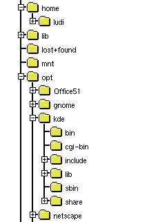
The functor LazyTree has the following argument signature:
functor LazyTree(structure Obj : LAZY_TREE_OBJECTS) signature LAZY_TREE_OBJECTS = sig type obj val children : obj -> obj list val is_leaf : obj -> bool val sel_name : obj -> string val icon : obj -> SmlTk.IconKind val selected_icon : obj -> SmlTk.IconKind end
The type obj is a representation of the objects to display
in the tree list. The other functions are selectors for the needed
information to build the tree: A function to get the children of a
single object, a function that must be true for leaf objects
of the displayed tree, a function to get the name of a single object
and functions that return the icons to display for a single selected
and non-selected object.
The export signature is:
functor LazyTree(structure Obj : LAZY_TREE_OBJECTS) : sig type obj = Obj.obj exception Error of string datatype history_state = hist_start | hist_middle | hist_end | hist_empty
The object type, an exception to be raised when errors occur and the return type of the function position below, that returns the position within the history.
val tree_list :
{width : int,
height : int,
font : SmlTk.Font,
selection_notifier : obj option -> unit} ->The tree list configuration options: The size in pixels of canvas widget containing the tree list, the font to use, a function to be called with the selected object (when the selection changes; the selected object is given as an option, because the selection can also change to none, e.g. when the parent node of the selected object is closed).
{canvas : obj -> SmlTk.Widget,
selection : unit -> obj option,
up : unit -> unit,
position : unit -> history_state,
back : unit -> unit,
forward : unit -> unit}
endThe function tree_list returns the canvas widget containing the tree list, a function that return the selected object as an option (there might be none), a function to change the selection to the parent node, a function that returns whether the history is empty, at the beginning, the end or somewhere in the middle (which might be needed if you want to activate/deactive buttons associated with the history functionality in the user interface; see also datatype history_state above), a and functions that make the tree list go backwards and forward in the history.
The drag&drop package is the lower layer of the generic interface package. It provides a canvas on which items are displayed, which can be ``grabbed'' with the mouse (by moving the cursor on them and pressing the right mouse button) and ``dropped'' (moving the cursor to another place on the canvas and releasing the right mouse button). By dropping objects onto each other, specific operations can be triggered.
Like GenGUI, the package is generic over the items in question:
functor DragAndDrop(DDitems: DDITEMS) : sig include DRAG_DROP_SIG sharing type item = DDitems.item end
with the following export signature:
signature DRAG_DROP_SIG = sig type item; type DDCanvas; exception DragAndDrop of string; val init : TkTypes.WidId-> DDCanvas; val place : DDCanvas-> item -> unit; val delete : DDCanvas-> item -> unit; val canvasBindings : TkTypes.WidId -> TkTypes.Binding list; end
Technically, the drag&drop package enriches the items on a canvas to handle drag&drop style manipulation. One creates a canvas widget, and passes its widget ID to the function init. The result is a drag&drop-canvas, on which one can place items with the function place and delete objects by the function delete. These items are described by the signatures DDITEMS:
signature DDITEMS = sig type item val selItemId : item-> TkTypes.CItemId val selDropZone : item-> Coord.Rect val isImmobile : item-> bool val grab : item-> unit val release : item-> unit val enter : item -> item list -> bool val leave : item -> unit val drop : item -> item list -> bool structure CB : sig include CLIPBOARD_W sharing type obj= item end end
The function selCItemId returns the Id of the underlying canvas item. Every item has a drop zone associated with it. This is the area, relative to the canvas item's upper left corner, in which the item is susceptible to drag&drop operations. (It is left to the structure providing the drag&drop items to ensure that the drop zone does not extend beyond the underlying item.)
Items can be selected by clicking them with the middle mouse button (the ``select'' button). Selected items are highlighted; selection allows cut, copy & paste operations, and in particular dragging multiple objects.
If the cursor is moved over an item i, and the left mouse button (called the grab button hereafter) is pressed, the item (along with other previously selected items) is ``grabbed'', if the function isImmobile i returns false (otherwise, nothing happens). The function grab i is called, so the item can e.g. change its graphical representation to indicate this fact. The object may either stay where it is, and the cursor may change shape to indicate the user is currently moving an item, or the whole object may be moved about along with the cursor, depending on the implementation of drag&drop, but the item structure should not make any presumptions about this.
If the cursor enters the drop zone of an item i while dragging another objects [j_1,...,j_n], the function enter i [j_1,...,j_n] is called. If it returns true, the entered object i is supposed to be accepting a drop of the objects j_1,...,j_n. It may (and should) change its visual representation to signal this fact. If the cursor is then released without having left the drop zone, a drop operation is performed by calling the function drop i [j_1, ..., j_n]. If the result is false, the drop is said to be "destructive", and the dropped item is deleted from the canvas, otherwise it reappears at the position where it was grabbed. If on the other hand the cursor leaves the drop zone of i again without the grab button being released, the function leave i is called, so i can eg. revert its visual appearance to the normal state. leave i is also called after a drop operation (no matter if destructive or not), but it is not called if the preceding call of enter returned false.
If the grab button is released with the grabbed item being over no other item's drop zone, the item is moved to that place on the canvas and the function release is called. release is also called after a non-destructive drop operation for all the dropped items.
The drag&drop-package further interfaces to the clipboard to allow interchange of objects across different drag&drop canvases, or to other applications. See the section on the clipboard below.
The file toolkit/tests+examples/boxes.sml contains a simple example of how to use the drag&drop package.
The module GenGUI implements a simple generic user interface based on the drag&drop paradigm. It comes in two variants: one based on "flat" objects (GenGUI); and another in which the objects are hierarchically organized as trees (TGenGUI). Both versions of the component are based on the common infrastructure (CI).
It has been implemented with a view to implementing user interfaces for applications based on the theorem prover Isabelle, but can also be used without Isabelle. On top of it, we have bilt a more elaborate user interface, the generic user interface toolkit GenIT. In GenIT, the construction history of objects is recorded, and becomes a first-class object of the interface. This allows features such as replay, redo, change and dependency management, and history navigation all to be implemented on the generic level of the GenGUI. Because of its size and complexity, we have decided to make GenIT available separately from sml_tk. See also [LW99,LW00].
The application one wishes to build an interface for is described by a signature SIMPLE_APPL_SIG. The generic user interface is a functor
functor SimGenGui(appl: SIMPLE_APPL_SIG) : SIMGENGUI
which when instantiated with an application returns a graphical user interface for that application.
Every application provides a collection of objects, which the GenGUI displays in a window (the ``notepad''). Every object has a type, which determines the icon used to represent the object on the manipulation area, and the operations applicable to that object. In TGenGUI, aside to the notepad, there is a navigation board displaying the object hierarchy, where the folders correspond to contents of the notepad and the leafs the objects of the system.
Operations come in three variations: nullary operations, corresponding to constants, or in other words, the objects which are there from the start; unary operations, which take exactly one object as their argument; and binary operations, which take two objects arguments.
Unary operations are applied by clicking on the object with the right mouse button, and selecting the corresponding operation from the menu appearing. Binary operations are applied by grabbing an object with the left mouse button, dragging it across the screen, and dropping onto another object.
New objects can be created as results of unary or binary operations.
In the signature SIMPLE_APPL_SIG, there are two types object and objtype, modelling the objects and the possible object types respectively. The typing is modelling by a function obj_type: object -> objtype, assigning to each object a type, and its extension objlist_type : object list -> objtype to lists of objects.
Further, objects may have a limited form of state, as modelled by the type mode. The mode of an object is given by the sel_mode : object-> mode function, and set by the set_mode : object* mode-> function. The mode can be set by the user with a pop-up menu provided by GenGUI; to implement this, modes have to have a name (given by mode_name: mode-> string), and the range an object's modes can take is limited by its type (modes: objtype-> mode list).
The type new_object models objects which are about to appear on the notepad. They are given by an object, a position where it should appear, and a direction (indicated by TkTypes.AnchorKind) where it should appear if there already is an object at the indicated direction. (The configuration option delta determines the minimum distance of objects when placing new objects.) Unary operations come in two flavours, standard operations and ones depending on the type of the object. Standard operations are available for all objects, and comprise of a list given by std_ops (typically, the first of this list will be a function to display an object), and two special operations rename and delete. Rename is called with the object, and a continuation with which the name of the object can be set. The actual querying the user for a name, and more importantly accepting or rejecting the user's choice, has to be implemented by the application. In contrast, delete is called when the object is about to be deleted to allow the application to clean up; the actual deletion (i.e. removal from the notepad) is implemented by GenGUI. This is described by the signature SIMPLE_APPL_SIG, of which we have this excerpt:
signature SIMPLE_APPL_SIG = sig eqtype objtype eqtype mode type object type new_object = object * TkTypes.Coord* TkTypes.AnchorKind (* Typing objects *) val obj_type : object -> objtype val objlist_type : object list -> objtype Option.option val is_constructed : objtype-> bool (* objects of this type are construction objects *) (* Each object has a name, which can be selected and changed * with the standard rename operation (below). *) val sel_name : object -> string Option.option (* Modes, and how to select, set and name them. *) val modes : objtype -> mode list val mode_name : mode -> string val sel_mode : object -> mode val set_mode : object* mode-> unit (* Icons. Crucially, changing the mode may change the icon. *) val icon : objtype* mode -> Icons.icon (* constants *) val init : unit -> new_object list (* standard unary operations *) val std_ops : ((object -> unit)* string) list val rename : object -> (string-> unit)-> unit val delete : object -> unit (* object-type-specific unary operatons *) val mon_ops : objtype -> ((object* TkTypes.Coord -> (new_object -> unit) -> unit) * string) list (* binary operations *) val bin_ops : objtype* objtype -> (object* SmlTk.Coord* object list* (new_object-> unit)-> unit) Option.option
The type of mon_ops and bin_ops certainly requires an explanation. Both are indexed by the type of the object(s) involved, which is the first argument.
For an object of type t, mon_ops t is a list of pairs [(f_1,s_1), ..., (f_n, s_n)], where s_i is the name of the operations under which it appears in the menu, and f_i:object -> (object -> unit) -> unit is a function implementing the operation, taking the object as its argument, and a continuation (of functionality new_object-> unit) as its second argument, by which new objects can be introduced to the notepad area (so each call of the continuation results in the appearance of exactly one object and its subsequent appearance on the notepad).
For two objects of type t_1 and t_2 (corresponding to an object of type t_2 being dropped onto an object of type t_1), binOps t_1 t_2 is an option: either it is NONE which means that the drop operation is not possible; or it is SOME f where f is a function taking as its first argument the object being dropped onto, as its second argument the singleton list of the object being dropped, and as a third argument a continuation producing new objects on the notepad. Both the dropping and the dropped object remain unchanged (to implement operations changing objects, see below). If binOps t_1 t_2 is SOME f, its icon is highlighted (see Section 4.4.4. below) to indicate that the operation is possible.
The only way to change an object's internal structure is the construction area. The general idea here is that each instantiation of the GenGUI should be thought of as an application to build objects of one specific type. For example, in the Transformation Application System TAS the main construction objects are programs, and the other objects are program transformations, parameter instantiations etc. (see [LW99]), and in the interface IsaWin to the theorem prover Isabelle, the main construction objects are proofs (for theorems), and the other objects are theorems, theories, rewriting sets etc.
A construction object can be opened by double-clicking it with the left mouse button. A (sub)-window will appear (see configuring GenGUI below) showing the ``internals'' of the object, possibly along with menus, buttons and other widgets. One can now either use these to change the objects' internal structure, or one can drag down objects from the manipulation area to interact with the object under construction. If one is done, there should be a closing button or menu entry by which one can close the construction area again. The specifics and visual appearance of the construction area are entirely dependent on the application in question (hence there should be a closing button, technically this is not enforced), and have to be implemented by the application as follows.
Note also that there is no restriction to one type of object- object types which can be constructed are those for which the predicate is_constructed is true. The construction area is described by the following excerpt from the signature APPL_SIG:
type ca val area_ops : objtype-> ca-> object list-> unit val area_open : TkTypes.WinId* object* (object -> unit) -> (ca* TkTypes.Widget list* (unit-> unit)) val area_init : unit-> unit
The type ca models the state of the construction area. When an object is opened in the construction area, area_open is called with the object and the identifier of the window in which the construction area sits. This may be GenGUI's window, or a separate window, as determined by the configuration of GenGUI. The third argument to area_open is a function which is called when the construction is finished; it creates one (or more) objects on the notepad, most notably the one which has been constructed. Be sure to call this function with the constructed object prior to closing the construction area, otherwise the object will disappear in a puff of SML. area_open returns a triple, consisting of the state of the construction area just created, a list of widgets making up the construction area, and a function to be called after the widgets have been installed which initializes them.
In contrast, area_init is just called once, after GenGUI has been started, e.g. to initialize variables for radiobuttons. When calling area_init the construction area is not open, so do not try to initialize widgets here.
Finally, dragging an object down from the notepad into the constructoin area results an operation being triggered. The operation is given by area_ops: objtype-> ca-> object list-> unit which takes as argument the type of the object(s) dragged down, the state of the constrution area, and the actual objects; it does not have a meaningful return value.
As we can see, the
construction area even more relies on side effects than the rest of
the GenGUI. The functional purist shudders, since this also means we
have to provide functionality like history navigation (or the close
button) individually, for each application, rather than on a generic
level. These failings area remedied in GenIt.
Like the utility windows, the visual appearance of the GenGUI can be configured. This configuration is handled by the substructure structure Conf: GENGUI_CONF of the application with the following signature. Apart from visual details like colours, window sizes and icons, we can also configure wether icons should remain visible while being dragged across the notepad (moveOpaque), and wether the construction area should be a subwindow of the notepad, or a separate window (oneWindow).
signature GENGUI_CONF = sig (* This is the width and height of the construction area *) val width : int val height : int (* The background colour of the construction area *) val background : TkTypes.Color (* The font and the width of the box, in pixels, * used to display the icons *) val iconNameFont : TkTypes.Font val iconNameWidth : int (* The icon used to display the trashcan, and its initial position *) val trashcanIcon : unit-> Icons.icon val trashcanCoord : TkTypes.Coord (* If opaqueMove is true, then the whole item will move if it * is grabbed; ows. only change cursor to indicate an object is * being moved. *) val moveOpaque : bool (* If oneWindow is true, the construction area will appear as * a widget within the lower part of the window (which will be * large enough to hold it. Actually, this should be called _one * widget_, since it means that both construction and assembly * come within one frame); otherwise, the construction area * will appear as a separate window. *) val oneWindow : bool (* The height and width of the construction area, and the * position of the window. The X/Y position and the caTitle options * determine the placing and title of the construction area window, * and only take effect if oneWindow is false. *) val caHeight : int val caWidth : int val caXY : (int* int) Option.option val caTitle : string-> string (* The minimum distance between two objects' dropzones when placing * new objects *) val delta : int end
The export signature of GenGUI divides roughly into two parts. The first block describes single objects and how to introduce them onto the notepad. The second part models the state of GenGUI as a whole (type gui_state). There is an initial state initial_state corresponding to no objects being created yet, a function state:unit-> gui_state which returns the current state of notepad and construction area, and a function init:gui_state-> unit which has to be used as the initialization function of the main window, because it initializes GenGUI. If GenGUI suddenly behaves very strange indeed (e.g. doesn't react to drag&drop) this is most likely caused by failing to initialize it properly. Finally, the whole generic interface is just a widget (isn't everything?):
signature GENGUI_SIG = sig type object type new_object val intro : new_object -> unit (* Introduce (not "create" really) a new object * onto the manipulation area. *) (* the state of the gui *) type gui_state = new_object list (* The GenGUI main widget. You MUST use the init function below * to initialize this widget. (Note GenGUI doesn't check this * itself.) *) val main_wid : TkTypes.WinId -> TkTypes.Widget (* In the following, init takes a gui_state and returns a function * which has to be used as the init function of the main window, * as it sets up the GenGUI. * * state returns a gui_state suitable as an argument to init. *) val init : gui_state-> unit (* call that as init action of main window *) val state : unit-> gui_state (* This is the initial state which only has those objects as given * by the application's init() function (see above). *) val initial_state : unit-> gui_state exception GenGUI of string (* Something went wrong. If this exception is raised, something * has badly, unrecoverably (for this session) gone wrong. *) (* Resynchronize all icons, e.g. if objects have changed their mode. *) val redisplay_icons : (object-> bool)-> unit type objectlist= object list structure CB : CLIPBOARD sharing type CB.obj = objectlist end
The file toolkit/tests+examples/simpleinst.sml contains a small example of how to use the generic graphical user interface.
simpleinst knows two object types, texts and numbers. Texts can be concatenated by drag&drop (the dropped text being appended to the one it is dropped onto), or they can be opened and edited in the construction area. Numbers, on the other hand, have four modes, corresponding to the four basic arithmetical operations. When dropping a number onto another, it is added to, subtracted from, multiplied with, or it divides the number it is dropped onto, corresponding to the mode of the dropped object.
There is a button importFile which calls the filer to select a file the contents of which (as a text) then appear on the manipulation area. The following picture shows the visual appearance of simpleinst with the object obtained by dropping the predefined object Jerusalem 2 onto Jerusalem 1 currently open in the construction area:
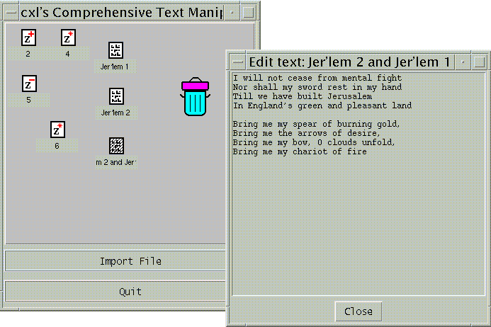
The visual appearance of a system obtained by instantiating GenGUI can be customised considerably. The basic layout will remain the same, with the the construction area appearing in the bottom half of the screen, but the construction area's appearance and functionality are freely programmable. The main window of the simple instantiation can have menus and/or buttons attached to it, and of course the icons, including the trashcan icon, can be changed.
An implementation of tabs as in the following screenshot (taken from the tabs example in src/toolkit/tests+examples/tabs_ex.sml),
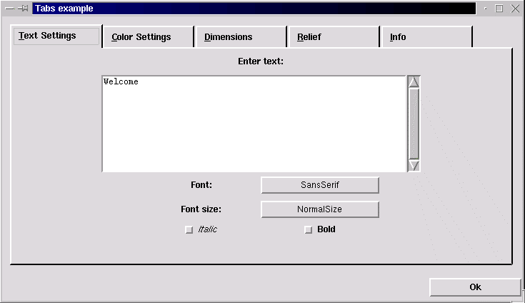
which has the following export signature:
signature TABSSIG =
sig
exception Error of string
val tabs : {pages : {title : string,
widgets : SmlTk.Widgets,
show : SmlTk.SimpleAction,
hide : SmlTk.SimpleAction,
shortcut : int option} list,The definition of the displayed pages including the page title, the widgets displayed within the frame building the page, and a shortcut key as an integer value (the nth char in the page title). The show and hide actions are needed to initialize the widgets when a page is shown, and save its content when a page is hidden. Therefore the show action is called when the widgets are allready displayed, and the hide action is called just before the widgets are (temporarily) destroyed. There is also an example in src/toolkit/tests+examples/tabs_ex.sml).
configure : {width : int,
spare : int,
height : int,
font : SmlTk.Font,
labelheight : int}}These are the available configuration options: The width and height of the frame containing the widgets of a single page, the amount of pixels to spare right from the page titles, the font of the page titles and the maximum height of the labels containing the page titles (height of the specified font + x).
-> SmlTk.Widget * SmlTk.Binding list
The returned canvas widget in which the tabs are displayed and the binding list containing the key shortcuts, which should be bound to the window containing the tabs. Unfortunately there is no other way of key adding bindings to the tabs, because Tcl/Tk does not support key bindings to canvases.
val std_conf : {width : int,
spare : int,
height : int,
font : SmlTk.Font,
labelheight : int}This is a standard configuration to use with the tabs (comments on parameters, see above).
A simple implementation of tables, that returns a grid of labels within a frame (screenshot taken from the tables example in src/toolkit/tests+examples/table_ex.sml):
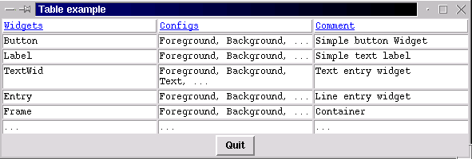
The structure Table has the following export signature:
signature TABLE_SIG =
sig
val table : {constant_column_width : bool,If set to true, the largest column width found is applied to all columns.
headline_relief : SmlTk.RelKind, headline_borderwidth : int, headline_foreground : SmlTk.Color, headline_background : SmlTk.Color, field_relief : SmlTk.RelKind, field_borderwidth : int, field_foreground : SmlTk.Color, field_background : SmlTk.Color,
The relief, borderwidth, foreground and background colour of the headline and table fields.
container_background : SmlTk.Color} ->
The background colour of the frame containing the table fields (visible if a different borderwidth is set for headline and table fields).
SmlTk.AnnoText list list -> SmlTk.Widget
The textual content of the table. Adding widgets to the annotated text might confuse the calculation of a constant comlumn width.
The returned frame widget containing the table.
val std_conf : {constant_column_width : bool,
headline_relief : SmlTk.RelKind,
headline_borderwidth : int,
headline_foreground : SmlTk.Color,
headline_background : SmlTk.Color,
field_relief : SmlTk.RelKind,
field_borderwidth : int,
field_foreground : SmlTk.Color,
field_background : SmlTk.Color,
container_background : SmlTk.Color}A standard configuration offering standard values for the parameters described above.
This section details the software and hardware requirements necessary to run sml_tk, the installation procedure, the runtime configuration of sml_tk and other helpful hints.
sml_tk requires the following software:
For the default configuration (pipe-based communcation with Tcl/Tk), a Standard ML compiler implementing the Posix and Unix structures from the SML Basis Library. In particular, sml_tk is known to work with the following compilers:A wish (Tcl/Tk interpreter) of version 4.0 to 8.0 or later. If you do not know if the wish is installed on your system, type wish in a shell window; you should get a Tcl prompt (%) and a blank window called wish. Otherwise, download Tcl/Tk from here.
Optionally, a standard make for installation (GNU make and Solaris make are known to work).
The TCL_INSIDE configuration only runs with Standard ML of New Jersey (SML/NJ), but should be easier to port to non-Posix systems such as Windows.
Optionally, a standard make for installation (GNU make and Solaris make are known to work).
sml_tk has no particular hardware requirements, and is known to run on the Solaris and Linux operating systems.
sml_tk can be obtained as a single tar file from the sml_tk home page
Before you start the installation itself, you have to configure sml_tk to your system's need by setting the variables in the first section of the Makefile to appropriate values. The most critical of these are obviously SMLTK_LIB and SMLTK_TCL:
The variables SMLTK_LIB, SMLTK_LOGFILE and SMLTK_TCL also control the runtime of sml_tk (see section 5 of the sml_tk manual). sml_tk can be installed by producing a dumped image, or by using SML/NJ's compilation manager. The installation itself is painless. Just type make in the toplevel directory, and it will produce an image; alternatively, use SML/NJ's compilation manager (see below).
To remove the Compilation Manager's temporary files, do make clean. To also remove the dumped image, use make realclean.
As already mentioned previously, sml_tk comes in two different configurations: the default one, based on a loose coupling with the Tcl/Tk shell, and another one called TCL_INSIDE, based on linking the Tk-sources on the C-level to the NJML-runtime system. To install the configuration TCL_INSIDE is the package njml_patchwhich can be downloaded from the sml_tk web site is needed. It has to be applied to an existing SML/NJ installation which it transforms by adding additional sources and patching others at the level of C source files. After succesfully running the Makefilein njml_patch (for which various system dependent paths have to be set appropriately; see documentation for details), the compilation of sml_tk on top of this extended runtime system is performed with the flag TCL_INSIDE set on. The effect is limited only to a very small portion of sml_tk.
The following variables govern the runtime behaviour of sml_tk:
These are given default values in the Makefile. The default values can be overridden by setting an environment variable of the same name, and calling the function SmlTk.init(); only the options to which the corresponding environment variable actually exists are changed, allowing a selective update. The environment variable can in turn be overriden by a commandline argument of the form --<VARNAME>=value (as in --SMLTK_TCL=/bin/wish) when calling an sml_tk application from the shell. Finally, their value can be changed from within SML by calling e.g. SmlTk.updTclPath, see Sect. 3.2.17 above.
sml_tk has been developed with SML/NJ, version 110. Meanwhile, other SML97 compilers have become available, and sml_tk runs under PolyML and MoscowML as well (apart from small details such as the kill-mechanism and the generation of a binary image for MoscowML). Given these experiences, we believe it should be relatively easy to port sml_tk to other platforms and compilers; an experienced ML programmer should be able to do this himself. The main work in porting sml_tk to another compiler is to write a structure SysDep, which implements the signature SYS_DEP (in src/sys_dep.sig). The files njml.sml, poly.sml and mosml.sml may serve as a starting point.
If you do port sml_tk to another operating system or SML compilers, please let us know so we can support your port in future releases of sml_tk.
We also invite further contributions to the toolkit library. If you have written a piece of sml_tk software which is sufficiently versatile to be of general use, then please do get in touch with us. We would very much like to extend the toolkit library in future releases.
This section contains some tips which you may find useful.
If you don't want to produce a binary image, or are using Moscow ML, you can load sml_tk by useing the file root_poly.sml and root_mosml.sml (for PolyML and Moscow ML respectively.)
SML/NJ users can make efficient use of the Compilation Manager by including a reference to sml_tk/src/sources.cm in the entity description files of their application(s), and the CM will automatically compile sml_tk when needed. You may want to stabilize sml_tk in that case (see the manual for CM).
The dumped images contain some of the examples found in the source distribution. If you do not want them, change this in src/sources.cm.
The export interface of sml_tk consists of two structures TkTypes and SmlTk. If you want them to be opened in the dumped images, this can be changed in src/Makefile. Also, the dumped images call SmlTk.initSmlTk first thing they are loaded (in order to correctly set SMLTK_ROOT etc. from the environment variables). This can be changed in src/njml1.sml in the function xSmlTk.
TCL_INSIDE is quite tricky to install. It requires the installation of the package "njml_patch", that attempts to modify and extend the C-sources of the njml-runtime system and to link the Tk-library to it. This process highly depends on very machine-dependent features and may fail for various reasons.
sml_tk cannot send an interrupt to a running application (see the discussion in section 2), so one cannot implement an interrupt button. Interupts have to be sent to the window of the SML-shell.
The interrupt mechanism doesn't work with SML compilers other than SML/NJ.
[Fos 97] E. Foster-Johnson: Graphical Applications with Tcl and Tk . M&T Books . 2nd Edition December 1997 . ISBN:1558515690.
[FW94] M. Fröhlich, M. Werner: The Interactive Graph-Visualization System daVinci - a User Interface for Applications. Informatik-Bericht Nr. 5/94, Universität Bremen, 1994.
[HM 97] M. Harrison, M. McLennan: Effective Tcl/Tk Programming. Addison-Wesley, December 1997. ISBN: 0201634740.
[KSW96] Kolyang, T. Santen, B. Wolff: Correct and User-friendly Implementations of Transformation Systems. In: M.C. Gaudel, J. Woodcock (ed): FME'96: Industrial benefits and Advances of Formal Methods, pp. 629-648. LNCS 1051,1996.
[Lib 94] D. Libes: Exploring Expect. O'Reilly 1994. ISBN: 1565920902.
[LW99] C. Lüth, B. Wolff: Functional Design and Implementation of Graphical User Interfaces for Theorem Provers. Journal of Functional 9(2), 167-- 189, 1999.
[LW00] C. Lüth, B. Wolff: TAS - A Generic Window Inference System. 13th International Conference on Theorem Proving in Higher-Order Logics TPHOLs 2000, LNCS 1869, Springer Verlag. pages 405--422
[Oust 94],J. K. Ousterhout: Tcl and the Tk .Addison-Wesley . May 1994. ISBN: 020163337X.
[Pau 96] L. C. Paulsen: ML for the Working Programmer(2nd. Ed.). Cambridge University Press 1996. See also http://www.cl.cam.ac.uk/users/lcp/MLbook/.
[PR95] F. Pessaux, F. Rouaix: The Caml/Tk interface, Projet Cristal, INRIA Roquencourt, July 1995. ftp://ftp.inria.fr/lang/../INRIA/Projects/cristal/caml-light/camltk.dvi.tar.gz.
[REF 96] Tcl and Tk Reference Manual. Linux Systems Labs . May 1996. . See also http://www.tclconsortium.org/books/index.vet.
[VTS95] T. Vullinghs, D. Tuijnman, W. Schulte: "Lightweight GUIs for Functional Programming". PLILP 95, Utrecht, The Netherlands, Sept. 20-22, 1995.
[Wel 97] B. Welch: Practical Programming in Tcl and Tk.
Prentice-Hall/PTR. 2nd Edition July 1997. ISBN: 0136168302. See also
http://www.tclconsortium.org/books/index.vet.
sml_tk can produce a logfile (see above) in which the communication between SML and the wish is recorded. Logfiles can be helpful in debugging applications, since they show what "really" happened; in particular, this can show whether source of unexpected behaviour lies in the SML code, or quirks of Tk (or, God forbid, a bug in sml_tk).
Nevertheless, it should be stressed that logfiles are not for the beginner, but rather the advanced user exploring the more intricate features of both sml_tk and Tk.
In this appendix, we present a commented logfile produced by the small example from section 1. The user interaction proceeds as follows: after starting the program, enter a name in the text entry, press return and close the window by clicking the quit box. Here is the resulting logfile.
The general format of the logfile is that lines beginning with == are sent from sml_tk to the wish, and lines beginning with <== are sent from the wish to sml_tk. It always starts with a standard prelude, which sets up the wish for use with sml_tk:
== set tcl_prompt1 "puts -nonewline {} "
set tcl_prompt2 "puts -nonewline {} "
proc Write {msg} {
puts stdout $msg
flush stdout
}
proc WriteSec {tag msg} {
set status [catch {eval $msg} res]
if {$status == 0} {
puts stdout "$tag $res"
} else {
puts stdout "ERROR $res"
}
flush stdout
}
proc WriteCmd {tag msg} {
set status [catch {eval $msg} res]
if {$status == 0} {
puts stdout "$tag"
} else {
puts stdout "ERROR $res"
}
flush stdout
}
proc WriteM {msg} {
puts stdout $msg
flush stdout
puts "EOM"
flush stdout
}Now follow the packing commands for the main window. Note the names: the main window's Tk name will always be . (dot). Sub-windows or widgets within a window, or subwidgets will always have the name of the father window/widget, followed by a dot and their own name. The names anowidXX are the anonymous widget identifiers created by newWidgetId.
Here, the packing proceeds in the following order: first the frame with its two components is packed, the text label "name" on the left, and the text entry on the right followed by the bindings for the text entry:
== WriteCmd "CMDOK" {pack [frame .anowid24 ] -side top}
<== CMDOK
== WriteCmd "CMDOK" {pack [label .anowid24.anowid22 -text "name:"] -side left}
<== CMDOK
== WriteCmd "CMDOK" {pack [entry .anowid24.anowid21 -width 20] }
<== CMDOK
== WriteCmd "CMDOK" {bind .anowid24.anowid21 <Return> {Write "WBinding main .anowid24.anowid21 <Return> (%b,%s,%x,%y,%X,%Y) "}}
<== CMDOKNote how the wish acknowledges execution of each command sent with CMDOK. Further, one cannot see from the logfile what <Return> has been bound to, since sml_tk only binds it to a function indicating the event has occurred, and does the mapping to the relevant ML function internally. The packing continues with the quit button, and finishes with setting the window title:
== WriteCmd "CMDOK" {pack [button .anowid23 -text "Quit" -command {Write "Command main .anowid23"}] -side bottom}
<== CMDOK
== WriteCmd "CMDOK" {wm title . "Please enter name"}
<== CMDOKNow sml_tk is waiting for user input. Hence, the next communication is initiated by the wish, indicating that the <Return> key has been pressed:
<== WBinding main .anowid24.anowid21 <Return> (96,0,80,16,277,193)
On the ML side, the function endInput is executed. This calls the sml_tk function readTextAll to read the contents of the text widget. A value is requested from the wish with WriteSec, and sent in a line preceded with VValue:
== WriteSec "VValue" {.anowid24.anowid21 get}
<== VValue William LeeThen, the title of the window is set accordingly:
== WriteCmd "CMDOK" {wm title . "William Lee"}
<== CMDOKAgain, the system is waiting for something to happen. In this case, the quit button (widget id anowid23 is pressed. sml_tk calls the function quit, which in turn closes the window:
<== Command main .anowid23 == destroy .
It should be pointed out that in an application of decent size, the interaction between wish and sml_tk is not always as orderly as above. In particular, bindings may be activated at any point, even when sml_tk is waiting for a value from the wish.